<!doctype html>
<html lang="en">
<head>
  <meta charset="utf-8">
  <meta name="viewport" content="width=device-width, initial-scale=1">
  <title>arxiv digest — 2026-09-04</title>
  <style>
:root {
  --bg: #ffffff;
  --fg: #1f2328;
  --muted: #59636e;
  --border: #d0d7de;
  --card: #f6f8fa;
  --link: #0969da;
}
body {
  max-width: 980px;
  margin: 0 auto;
  padding: 2rem 1rem 5rem;
  font-family: -apple-system, BlinkMacSystemFont, "Segoe UI", Helvetica, Arial, sans-serif;
  line-height: 1.55;
  color: var(--fg);
  background: var(--bg);
}
a { color: var(--link); }
img { max-width: 100%; height: auto; }
pre, code { background: var(--card); border-radius: 6px; }
pre { padding: 1rem; overflow-x: auto; }
blockquote { border-left: 4px solid var(--border); padding-left: 1rem; color: var(--muted); }
details { margin: 0.6rem 0; }
summary { cursor: pointer; font-weight: 600; }
.paper-figures-scroll {
  display: flex;
  gap: 1rem;
  overflow-x: auto;
  overscroll-behavior-x: contain;
  padding: 0.75rem 0.25rem 1rem;
  margin: 1rem 0 1.25rem;
  border-top: 1px solid var(--border);
  border-bottom: 1px solid var(--border);
  scroll-snap-type: x proximity;
}
.paper-figure-card {
  flex: 0 0 min(260px, 72vw);
  scroll-snap-align: start;
  background: var(--card);
  border: 1px solid var(--border);
  border-radius: 12px;
  padding: 0.55rem;
}
.paper-figure-card img {
  display: block;
  width: 100%;
  max-height: 240px;
  object-fit: contain;
  background: white;
  border-radius: 8px;
}
.paper-figure-caption {
  display: block;
  margin-top: 0.5rem;
  color: var(--muted);
  font-size: 0.85rem;
}
.figure-strip-hint {
  color: var(--muted);
  font-size: 0.9rem;
  margin-bottom: -0.3rem;
}
</style>
  <!-- MathJax: renders $...$ inline math and $$...$$ display math, plus
       \(...\) and \[...\]. Loaded from the official CDN; works offline
       once cached. Configured to skip code/pre blocks so arxiv IDs that
       look like dollar amounts don't get mangled. -->
  <script>
    window.MathJax = {
      tex: {
        inlineMath: [['$', '$'], ['\\(', '\\)']],
        displayMath: [['$$', '$$'], ['\\[', '\\]']],
        processEscapes: true,
        processEnvironments: true
      },
      options: {
        skipHtmlTags: ['script', 'noscript', 'style', 'textarea', 'pre', 'code'],
        ignoreHtmlClass: 'tex2jax_ignore',
        processHtmlClass: 'tex2jax_process'
      }
    };
  </script>
  <script id="MathJax-script" async
    src="https://cdn.jsdelivr.net/npm/mathjax@3/es5/tex-chtml.js"></script>
</head>
<body>
<header style="background-color: #333; color: white; padding: 15px; margin-bottom: 20px;">
  <h1 style="margin: 0; font-size: 24px;">
    <a href="https://ochelpan.github.io/arXiv_clean/" style="color: white; text-decoration: none;">Main</a>
  </h1>
</header>

<h1>Daily arXiv Report</h1>

<hr>
<p>
<a href="index.html">← Index</a>
 · <a href="papers_04.html">← Previous</a> · <a href="papers_06.html">Next →</a>
</p>
<hr>

<h2>Papers 81–100</h2>
<p><a id="paper-2609.02228"></a></p>
<h3 id="unfolded-krylov-complexity-universal-chaotic-dynamics-without-false-positives"><a href="http://arxiv.org/abs/2609.02228v1">Unfolded Krylov complexity: universal chaotic dynamics without false positives</a></h3>
<p><strong>Authors:</strong> Johanna Erdmenger, Kyoung-Bum Huh, Hyun-Sik Jeong, Juan F. Pedraza<br>
<strong>Type:</strong> theory · <strong>Category:</strong> other · <strong>PDF:</strong> <a href="https://arxiv.org/pdf/2609.02228v1">https://arxiv.org/pdf/2609.02228v1</a><br>
<strong>Analysis basis:</strong> full PDF text, analyzed in chunks
<strong>Topic relevance:</strong> <code>analog quantum simulation</code> <strong>1/5</strong></p>
<div class="figure-strip-hint">↔ Scroll figures horizontally</div>
<div class="paper-figures-scroll">
<figure class="paper-figure-card">
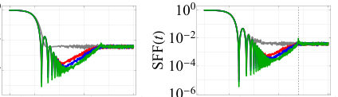
<figcaption class="paper-figure-caption"><b>Fig 1.</b> Figure 1. Spread complexity and SFF for RMT spectra. The top and bottom panels show the spread complexity and SFF, respectively, with the left and right columns corresponding to the raw and unfolded spectra. The curves represent the GOE (red), GUE (blue), GSE (green), and Poisson (gray) ensembles. The vertical dashed lines indicate the Heisenberg time tH = 2π. Unfolding preserves the Dyson-class hierarchy and the distinction between RMT and Poisson statistics while placing their late-time dynamics on a common scale.</figcaption>
</figure>
<figure class="paper-figure-card">
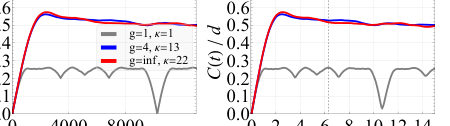
<figcaption class="paper-figure-caption"><b>Fig 2.</b> Figure 2. Spread complexity in representative quantum bil- liards. The left and right columns show the raw and unfolded dynamics, respectively, for the stadium and circular billiards (top) and triangular billiards (bottom). In each case, un- folding preserves the distinction between chaotic (or pseudo- integrable) and integrable behavior while placing the satura- tion timescale on a common spectral scale.</figcaption>
</figure>
<figure class="paper-figure-card">
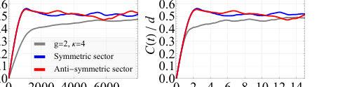
<figcaption class="paper-figure-caption"><b>Fig 3.</b> Figure 3. Level-spacing statistics and spread complexity for the κ = 4 isosceles triangular billiard in Table I. The left and right columns show the raw and unfolded data, respec- tively, for the unresolved level-spacing distribution (top), the symmetry-resolved level-spacing distributions (middle), and spread complexity (bottom). Blue and red curves represent the symmetric and antisymmetric sectors, respectively, while gray curves correspond to the unresolved spectrum. In the level-spacing panels, solid and dashed black curves denote the GOE and Poisson distributions, respectively.</figcaption>
</figure>
<figure class="paper-figure-card">
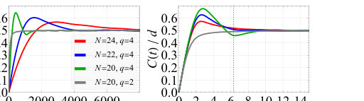
<figcaption class="paper-figure-caption"><b>Fig 4.</b> Figure 4. Spread complexity in other representative physical systems. The left and right columns show the raw and un- folded dynamics, respectively, for the XXZ spin chain (top), and the SYK model (bottom). In each case, unfolding pre- serves the distinction between chaotic and integrable behavior while normalizing the saturation timescale.</figcaption>
</figure>
<figure class="paper-figure-card">
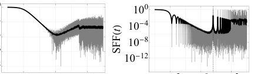
<figcaption class="paper-figure-caption"><b>Fig 5.</b> Figure 5. Spectral form factor for the logarithmic toy spec- trum. The left panel shows the raw spectrum, which exhibits a spurious ramp, while the right panel shows the unfolded re- sult, where this feature disappears. The black curve denotes a moving average used to reduce numerical fluctuations. This shows that the ramp originates from the non-uniform density of states rather than from RMT-type spectral correlations.</figcaption>
</figure>
</div>

<p><strong>Summary.</strong> This paper introduces 'unfolded Krylov complexity' as a superior diagnostic tool for quantum chaos. By mathematically unfolding the energy spectrum, the authors successfully remove non-universal, smooth spectral contributions that cause false positives in integrable systems. This allows researchers to reliably probe the genuine, universal signatures of many-body quantum scrambling.</p>
<p><strong>Why it may be interesting.</strong> This work provides a mathematically rigorous tool to filter out model-dependent spectral artifacts, offering a cleaner diagnostic for identifying true quantum chaos in complex many-body systems, which is relevant for understanding thermalization and scrambling in quantum matter.</p>
<details>
<summary>Detailed structure</summary>
<p><strong>Main problem.</strong> The central challenge is distinguishing genuine many-body quantum scrambling (chaos) from spurious signals arising from kinematic effects or integrable systems when using complexity diagnostics.</p>
<p><strong>Main result.</strong> Unfolding the spectrum prior to calculating Krylov complexity successfully suppresses false-positive peaks in integrable systems while preserving the universal spectral signatures characteristic of genuinely chaotic quantum dynamics.</p>
<p><strong>Method.</strong> The authors propose and implement 'spectral unfolding,' which separates the smooth, non-universal density of states from the microscopic spectral correlations, allowing for the construction of 'unfolded Krylov complexity.'</p>
<p><strong>Model / system.</strong> The analysis is applied to various quantum systems, including Random Matrix Theory (RMT) ensembles (GOE, GUE, GSE), quantum billiards (stadium, circular), and the logarithmic model, using the Lanczos iteration framework.</p>
<p><strong>Key observables.</strong> Krylov state complexity (spread complexity), Spectral Form Factor (SFF), and the unfolded spectrum $\xi_i$.</p>
<p><strong>Important parameters / regimes.</strong> The analysis focuses on the infinite-temperature limit ($eta=0$) and the distinction between the smooth density $ar{
ho}(E)$ and the fluctuating part $\delta
ho(E)$.</p>
<p><strong>Assumptions / limitations.</strong> The primary assumption is that the smooth component of the density of states can be accurately estimated and removed via unfolding.</p>
<p><strong>Figures summary.</strong> Figures compare the raw vs. unfolded complexity/SFF for RMT spectra and quantum billiards, demonstrating the removal of spurious peaks in non-chaotic cases.</p>
<p><strong>Paper structure.</strong> The paper systematically reviews the theory of unfolding and complexity, applies it to RMT and quantum billiards, develops the polynomial framework using the Lanczos iteration, and concludes with specific applications like the logarithmic model.</p>
</details>
<details>
<summary>Abstract</summary>
<p>A central challenge in diagnosing quantum chaos is to distinguish genuine many-body scrambling from kinematic effects of the spectrum. Krylov state complexity, or spread complexity, has emerged as a powerful diagnostic, with its characteristic growth, peak, and relaxation often taken as signatures of chaos. However, previous work has shown that this criterion can give false positives: saddle-dominated integrable systems may display prominent peaks even without random-matrix level correlations. We argue, based on complementary numerical and analytical evidence, that this ambiguity can be resolved by unfolding the spectrum prior to constructing the ensuing Krylov dynamics. By removing the non-universal smooth density of states while retaining microscopic spectral correlations, unfolding suppresses spurious peaks in integrable systems while preserving the universal spectral signatures of chaotic systems. Analytically, the formulation of the Lanczos iteration in terms of orthogonal polynomials yields an exact complexity kernel with a robust near-diagonal structure whose fine-grained features reflect the underlying spectral correlations. Moreover, for the logarithmic model, unfolding can be performed exactly, mapping the spectrum to a uniform lattice and yielding an analytic spread complexity that removes the false-positive peak. These findings establish unfolded Krylov complexity as a more reliable probe of genuine many-body scrambling.</p>
</details>
<p><sub><a href="#top">↑ back to top</a></sub></p>

<p><a id="paper-2609.02793"></a></p>
<h3 id="variational-preparation-of-thermofield-double-states-for-syk-models-via-multi-angle-qaoa-sequential-angle-pruning-for-circuit-reduction"><a href="http://arxiv.org/abs/2609.02793v1">Variational preparation of thermofield double states for SYK models via multi-angle QAOA: sequential angle pruning for circuit reduction</a></h3>
<p><strong>Authors:</strong> Haji Muhammad Husnain Ashfaq, Moongul Byun, Keun-Young Kim<br>
<strong>Type:</strong> theory · <strong>Category:</strong> quantum information and computing · <strong>PDF:</strong> <a href="https://arxiv.org/pdf/2609.02793v1">https://arxiv.org/pdf/2609.02793v1</a><br>
<strong>Analysis basis:</strong> full PDF text, analyzed in chunks
<strong>Topic relevance:</strong> <code>analog quantum simulation</code> <strong>1/5</strong></p>
<div class="figure-strip-hint">↔ Scroll figures horizontally</div>
<div class="paper-figures-scroll">
<figure class="paper-figure-card">
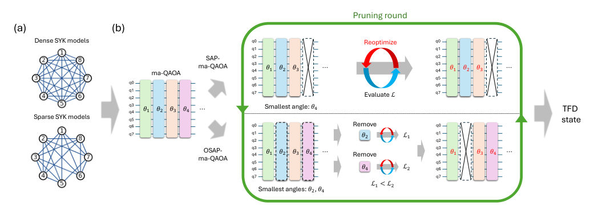
<figcaption class="paper-figure-caption"><b>Fig 1.</b> FIG. 1. Schematic overview of the SYK models and the circuit-pruning procedures in ma-QAOA. (a) Connectivity structures of the dense and sparse SYK models. (b) In SAP-ma-QAOA, the nonlocal Pauli-string evolution with the smallest angle magnitude (dashed) is removed and the remaining parameters are classically reoptimized. In OSAP-ma-QAOA, several evolutions with small angle magnitudes (dashed) are considered as removal candidates, and the candidate yielding the lowest post-reoptimization cost is selected; in the example shown, L1 &lt; L2. The colored gates represent different Pauli-string evolutions. The red and blue arrows indicate classical and quantum computations, respectively, and the...</figcaption>
</figure>
<figure class="paper-figure-card">
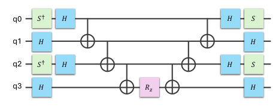
<figcaption class="paper-figure-caption"><b>Fig 2.</b> FIG. 2. Circuit realization of a single cost evolution for the cost term ψ1 Lψ2 Lψ3 Lψ4 L. The identity operators act on the other four qubits for N = 8 SYK models.</figcaption>
</figure>
<figure class="paper-figure-card">
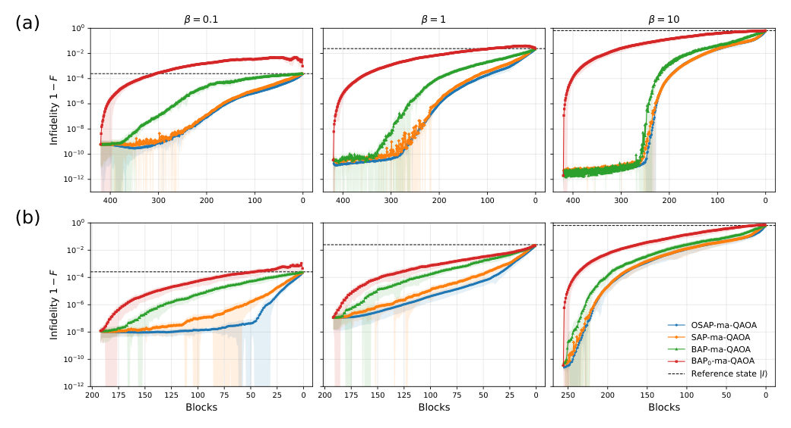
<figcaption class="paper-figure-caption"><b>Fig 3.</b> FIG. 3. Infidelity trajectories of the four pruning algorithms for the Gaussian N = 8 SYK models at β = 0.1, 1, and 10: (a) dense SYK and (b) sparse SYK with K = 32. The curves and shaded regions show EJ[1 −F] and σJ[1 −F], respectively, averaged over 20 disorder realizations. The black dashed lines indicate the disorder-averaged reference infidelity between the exact TFD state and the maximally entangled state |I⟩.</figcaption>
</figure>
<figure class="paper-figure-card">
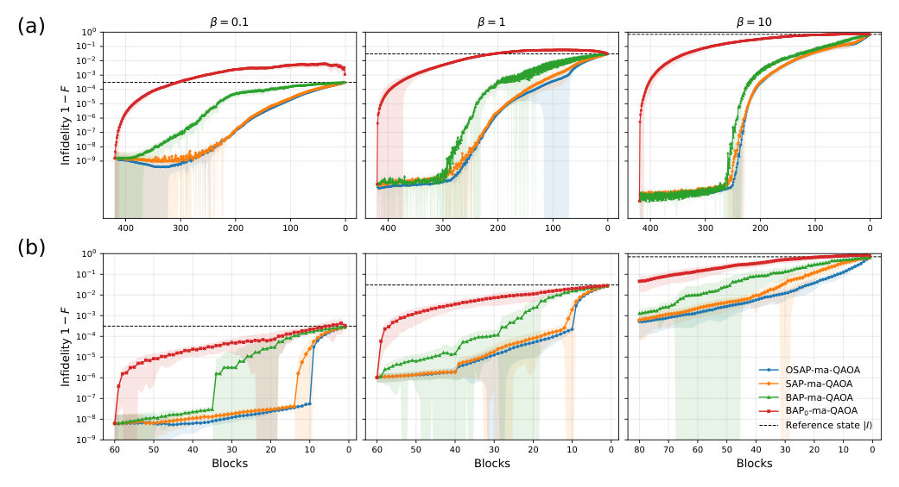
<figcaption class="paper-figure-caption"><b>Fig 4.</b> FIG. 4. Infidelity trajectories of the four pruning algorithms for the binary N = 8 SYK models at β = 0.1, 1, and 10: (a) dense SYK and (b) sparse SYK with K = 10. The curves and shaded regions show EJ[1 −F] and σJ[1 −F], respectively, averaged over 20 disorder realizations. The black dashed lines indicate the disorder-averaged reference infidelity between the exact TFD state and the maximally entangled state |I⟩.</figcaption>
</figure>
<figure class="paper-figure-card">
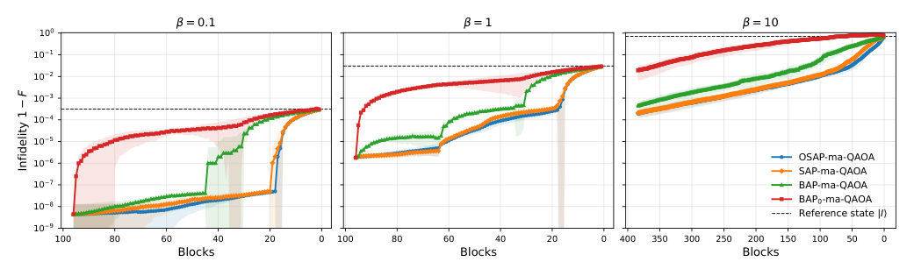
<figcaption class="paper-figure-caption"><b>Fig 5.</b> FIG. 5. Infidelity trajectories of the four pruning algorithms for the binary sparse N = 10 SYK model with K = 16 at β = 0.1, 1, and 10. The curves and shaded regions show EJ[1 −F] and σJ[1 −F], respectively, averaged over 20 disorder realizations. The black dashed lines indicate the disorder-averaged reference infidelity between the exact TFD state and the maximally entangled state |I⟩.</figcaption>
</figure>
</div>

<p><strong>Summary.</strong> This paper tackles the challenge of preparing complex Thermofield Double states for SYK models using deep quantum circuits. The authors introduce and test sequential angle-pruning algorithms applied to the multi-angle QAOA ansatz. These methods significantly reduce circuit depth while maintaining high fidelity, demonstrating a practical pathway toward implementing quantum simulations on near-term noisy quantum hardware.</p>
<p><strong>Why it may be interesting.</strong> This work directly addresses the resource limitations of quantum computation by developing systematic, data-driven methods to compress variational quantum circuits used for simulating complex many-body physics models like SYK.</p>
<details>
<summary>Detailed structure</summary>
<p><strong>Main problem.</strong> The primary challenge is preparing Thermofield Double (TFD) states using quantum circuits that are deep and resource-intensive, necessitating effective circuit reduction while maintaining high fidelity.</p>
<p><strong>Main result.</strong> The proposed sequential angle-pruning algorithms (SAP/OSAP) successfully reduce the circuit depth by removing a large fraction of Pauli-string evolutions (up to 92.1%) while retaining an average fidelity near 95% for SYK models.</p>
<p><strong>Method.</strong> The study employs the multi-angle QAOA (ma-QAOA) ansatz to approximate the TFD state, followed by two top-down sequential angle-pruning techniques that iteratively remove the least significant Pauli-string evolutions and reoptimize the remaining parameters.</p>
<p><strong>Model / system.</strong> The work is applied to Sachdev-Ye-Kitaev (SYK) models, tested in both Gaussian and binary forms, across dense and sparse connectivity regimes. The TFD state is the target state, relevant for simulating quantum phenomena in holographic duality.</p>
<p><strong>Key observables.</strong> Fidelity of the prepared TFD state, circuit depth (number of gates/blocks), and the percentage of removed nonlocal Pauli-string evolutions.</p>
<p><strong>Important parameters / regimes.</strong> Inverse temperature ($eta$), number of qubits ($N$), and the pruning strength/candidate pool size ($S, N_C$).</p>
<p><strong>Assumptions / limitations.</strong> The core assumption is that removing Pauli-string evolutions with small optimized angles does not significantly degrade the fidelity of the target TFD state, provided reoptimization is performed.</p>
<p><strong>Figures summary.</strong> Figure 1 schematically illustrates the SYK models and the pruning procedures (SAP-ma-QAOA and OSAP-ma-QAOA). Other figures track infidelity trajectories as a function of pruning strength or candidate pool size.</p>
<p><strong>Paper structure.</strong> The paper establishes the need for circuit reduction in TFD state preparation, introduces ma-QAOA, and then details the two sequential angle-pruning algorithms (SAP and OSAP). The methods are validated by applying them to various SYK models, comparing fidelity retention against circuit depth reduction.</p>
</details>
<details>
<summary>Abstract</summary>
<p>Variational preparation of thermofield double (TFD) states can require deep quantum circuits, particularly for interacting many-body systems. Reducing these circuits while retaining high fidelity is therefore crucial for TFD-state preparation on noisy quantum processors. We study this problem by applying the multi-angle quantum approximate optimization algorithm (ma-QAOA) to TFD-state preparation and introducing two top-down sequential angle-pruning algorithms. Starting from the optimized initial ma-QAOA circuit, both algorithms sequentially remove Pauli-string evolutions with small optimized angles and reoptimize the remaining parameters after each removal. We apply these algorithms to Gaussian and binary Sachdev--Ye--Kitaev (SYK) models in both dense and sparse cases. We find that ma-QAOA prepares the target TFD states with high fidelity and that sequential small-angle pruning retains high fidelity while reducing the circuit depth, particularly at low temperature. Moreover, using the post-reoptimization cost in sequential small-angle pruning further improves the fidelity. For the binary sparse $N=10$ SYK model at $β=10$, $88.8\%$--$92.1\%$ of the nonlocal Pauli-string evolutions are removed while retaining an average fidelity of approximately $95\%$. Finally, we propose extensions of the sequential pruning algorithms toward quantum--classical hybrid implementation.</p>
</details>
<p><sub><a href="#top">↑ back to top</a></sub></p>
<h2 id="other-papers-13">Other papers (13)</h2>
<p><em>Papers from primary archives without highlighted authors or any topic match. Click to expand.</em></p>
<details>
<summary>Show other papers</summary>

<p><a id="paper-2609.02229"></a></p>
<h3 id="a-proposal-for-a-hybrid-free-space-optical-quantum-communication-network-with-hexagonal-boron-nitride-based-single-photon-sources"><a href="http://arxiv.org/abs/2609.02229v1">A proposal for a hybrid free-space optical quantum communication network with hexagonal boron nitride-based single photon sources</a></h3>
<p><strong>Authors:</strong> Julien Chénedé, Mostafa Abasifard, Tjorben Matthes, Aslı Çakan, Tobias Vogl<br>
<strong>Type:</strong> theory · <strong>Category:</strong> quantum information and computing · <strong>PDF:</strong> <a href="https://arxiv.org/pdf/2609.02229v1">https://arxiv.org/pdf/2609.02229v1</a><br>
<strong>Analysis basis:</strong> full PDF text, analyzed in chunks</p>
<div class="figure-strip-hint">↔ Scroll figures horizontally</div>
<div class="paper-figures-scroll">
<figure class="paper-figure-card">
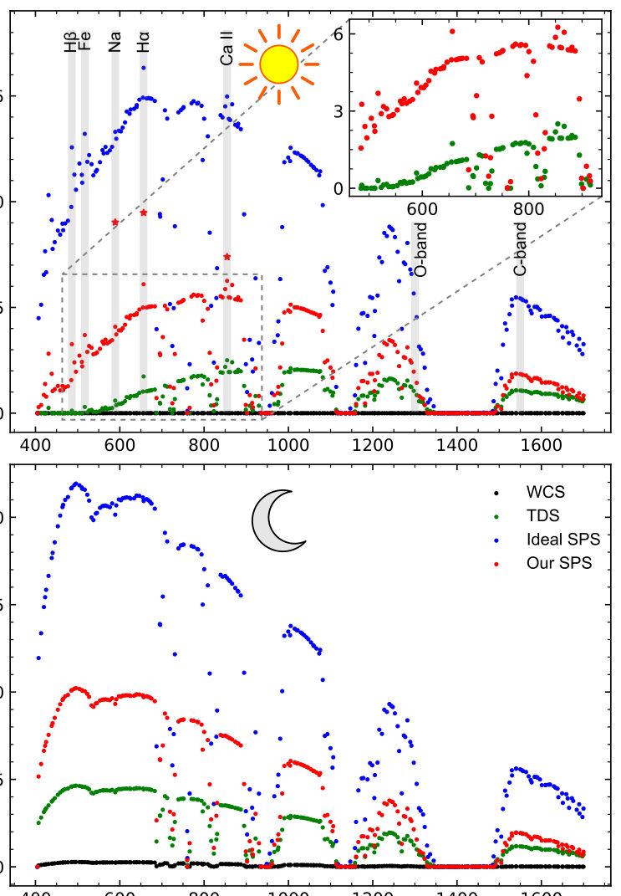
<figcaption class="paper-figure-caption"><b>Fig 1.</b> Fig. 1. The extractable secret bit per signal is shown for a single satellite (zenith) pass at an altitude of 500 km, evaluated for (a) daylight and (b) nighttime conditions. In daylight, several Fraunhofer lines, which are indicated by the labels of their corresponding elements, exhibit noticeably improved performance due to reduced background light. The ‘*’ symbols indicate the key rates achievable when using specialized Fraunhofer filters (commercially available for selected lines) that are commonly employed in solar astronomy. At night, where background noise is negligible, no particular wavelength offers a unique advantage; nonetheless, visible wavelengths generally outperform those in...</figcaption>
</figure>
</div>
<p><strong>Summary.</strong> This paper proposes a blueprint for a hybrid quantum internet by integrating satellite-based free-space quantum communication with terrestrial optical fiber networks. It leverages single-photon sources from hexagonal boron nitride (hBN) emitters operating at 854 nm, a wavelength chosen to maintain high performance during daylight hours while ensuring compatibility with existing fiber infrastructure.</p>
<p><strong>Why it may be interesting.</strong> This work directly addresses the engineering challenges of scaling quantum networks by proposing a concrete, multi-link architecture and identifying a practical operating wavelength that maximizes compatibility between different physical media (vacuum, air, fiber).</p>
<details>
<summary>Detailed structure</summary>
<p><strong>Main problem.</strong> Developing a practical, hybrid free-space optical (FSO) quantum communication network capable of connecting satellites to ground stations and bridging the 'last mile' to end-users.</p>
<p><strong>Main result.</strong> The paper proposes using hexagonal boron nitride (hBN) emitters operating near the Ca-II Fraunhofer line (854 nm) to achieve a balance between daylight FSO performance and compatibility with existing optical fiber infrastructure.</p>
<p><strong>Method.</strong> The authors developed a conceptual framework combining continuous network operation, hybrid links (space-to-ground-to-fiber), and performance modeling using realistic single-photon sources.</p>
<p><strong>Model / system.</strong> The system involves a quantum network architecture utilizing hBN-based single-photon sources for quantum key distribution (QKD) over free-space links (satellite to ground) and terrestrial fiber links.</p>
<p><strong>Key observables.</strong> Secret key rate (in units of secret bit per signal), and the comparison of key rates across different wavelengths (e.g., H$\alpha$ vs. Ca-II).</p>
<p><strong>Important parameters / regimes.</strong> Wavelengths (854 nm, 656 nm), link types (FSO, Fiber), and source characteristics (realistic SPS from hBN).</p>
<p><strong>Assumptions / limitations.</strong> The primary assumption is that operating near Fraunhofer lines allows single photons to be separated from strong solar background radiance, and that the 854 nm wavelength balances FSO and fiber compatibility.</p>
<p><strong>Figures summary.</strong> Figure 1 compares the extractable secret bit per signal for a single satellite pass at 500 km altitude, showing performance differences between daylight and nighttime conditions across various wavelengths.</p>
<p><strong>Paper structure.</strong> The paper introduces the challenge of hybrid quantum networking, analyzes the performance trade-offs between different wavelengths (H$\alpha$ vs. Ca-II) for daylight operation, and proposes the 854 nm wavelength as the optimal choice for bridging space-based and fiber-based quantum links.</p>
</details>
<details>
<summary>Abstract</summary>
<p>Hexagonal boron nitride (hBN) is known as a promising solid-state platform to host room temperature quantum emitters that produce high purity single photons. The bright and spectrally adaptable hBN emitters are space-compatible, making hBN well-suited for satellite-based free-space optical (FSO) quantum key distribution (QKD) at wavelengths where the atmospheric background is naturally suppressed. This paper presents a pathway to develop hBN emitters operating near the Ca-II Fraunhofer line (at 854 nm), enabling daylight FSO operation. Moreover, due to its compatibility with the first telecommunication window at 850 nm, it is possible to interface with optical fibers to bridge the `last mile' in a scenario where multiple end-users connect through a single optical ground station to a QKD satellite. We therefore introduce a concept that combines continuous operation of a quantum network, hybrid links to minimize deployment costs, and high data rates due to the use of realistic single photon sources. The realization would be an important milestone for the development of the quantum internet.</p>
</details>
<p><sub><a href="#top">↑ back to top</a></sub></p>

<p><a id="paper-2609.02865"></a></p>
<h3 id="a-quantum-oracle-separation-between-qma2-and-qma"><a href="http://arxiv.org/abs/2609.02865v1">A quantum oracle separation between QMA(2) and QMA</a></h3>
<p><strong>Authors:</strong> John Bostanci, Sabee Grewal, Jonas Haferkamp, Andrew Huang, Yeongwoo Hwang, Anand Natarajan, Chinmay Nirkhe<br>
<strong>Type:</strong> theory · <strong>Category:</strong> quantum information and computing · <strong>PDF:</strong> <a href="https://arxiv.org/pdf/2609.02865v1">https://arxiv.org/pdf/2609.02865v1</a><br>
<strong>Analysis basis:</strong> full PDF text, analyzed in chunks</p>
<div class="figure-strip-hint">↔ Scroll figures horizontally</div>
<div class="paper-figures-scroll">
<figure class="paper-figure-card">
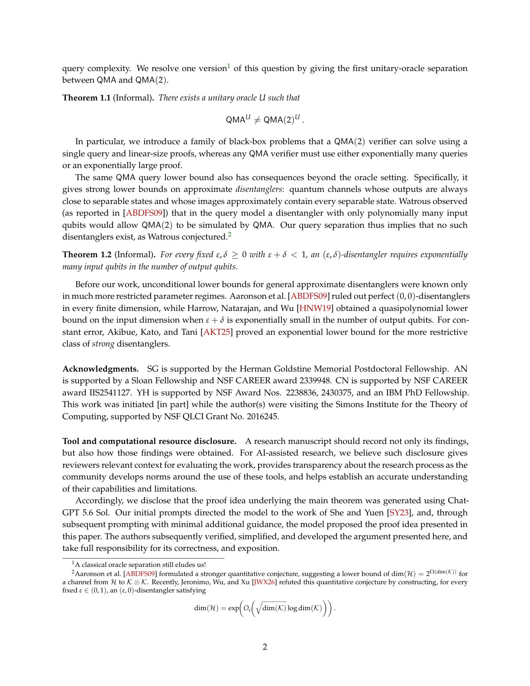
<figcaption class="paper-figure-caption"><b>Fig 1.</b> Low-resolution page preview, page 2</figcaption>
</figure>
<figure class="paper-figure-card">
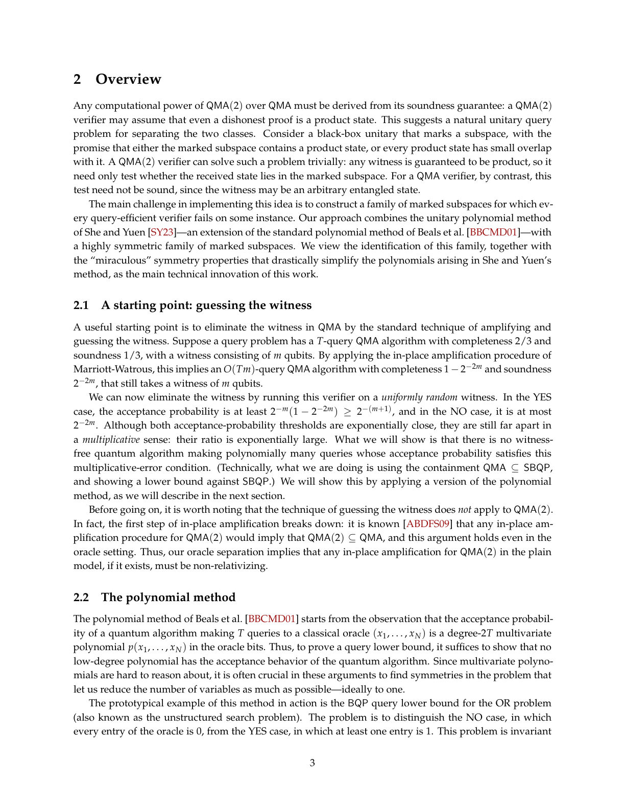
<figcaption class="paper-figure-caption"><b>Fig 2.</b> Low-resolution page preview, page 3</figcaption>
</figure>
<figure class="paper-figure-card">
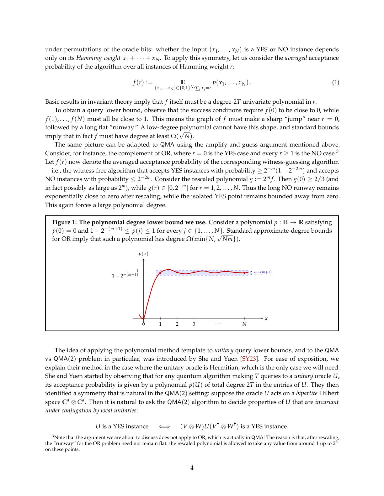
<figcaption class="paper-figure-caption"><b>Fig 3.</b> Low-resolution page preview, page 4</figcaption>
</figure>
<figure class="paper-figure-card">
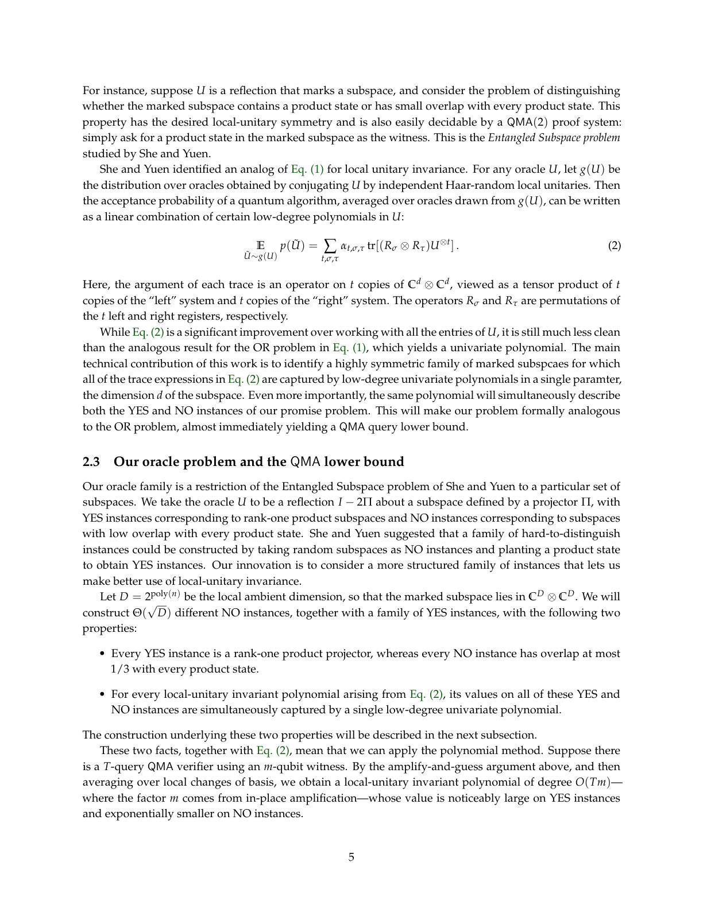
<figcaption class="paper-figure-caption"><b>Fig 4.</b> Low-resolution page preview, page 5</figcaption>
</figure>
<figure class="paper-figure-card">
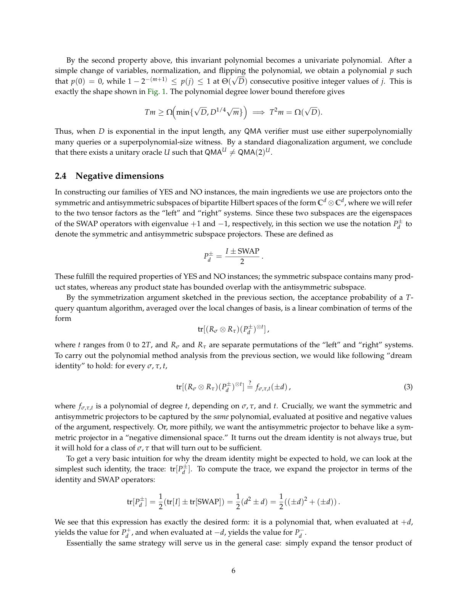
<figcaption class="paper-figure-caption"><b>Fig 5.</b> Low-resolution page preview, page 6</figcaption>
</figure>
</div>
<p><strong>Summary.</strong> This paper resolves a major open question in quantum complexity by proving a quantum oracle separation between QMA and QMA(2). By constructing a specific oracle, the authors demonstrate that the ability to use two unentangled proofs provides a computational advantage over standard QMA protocols. This separation also yields a strong, exponential lower bound on the resources required by quantum disentanglers.</p>
<p><strong>Why it may be interesting.</strong> The techniques used—polynomial methods applied to quantum query complexity and the analysis of subspace projectors—are highly relevant to understanding the fundamental computational power of quantum protocols, which underpins quantum information theory.</p>
<details>
<summary>Detailed structure</summary>
<p><strong>Main problem.</strong> The paper aims to determine if the quantum complexity class QMA(2) (verifiable with two unentangled quantum proofs) is strictly more powerful than QMA (standard quantum proofs).</p>
<p><strong>Main result.</strong> They prove a quantum oracle separation, showing that there exists an oracle U such that QMA_U != QMA(2)_U, and consequently establish an exponential lower bound on the input size required by any disentangler for $\epsilon + \delta < 1$.</p>
<p><strong>Method.</strong> The proof combines the unitarily invariant polynomial method (adapted from She and Yuen) with a novel construction utilizing symmetric and antisymmetric subspace projectors to derive the necessary lower bounds.</p>
<p><strong>Model / system.</strong> The analysis is conducted within the framework of quantum query complexity, focusing on the separation between QMA and QMA(2) using a constructed unitary oracle U acting on bipartite Hilbert spaces.</p>
<p><strong>Key observables.</strong> Acceptance probability, polynomial degree of the acceptance probability, and the required input size ($m$) for an $(\epsilon, \delta)$-disentangler.</p>
<p><strong>Important parameters / regimes.</strong> The separation relies on the parameters $\epsilon$ and $\delta$ defining the disentangler approximation, and the ambient dimension $D$ related to the oracle structure.</p>
<p><strong>Assumptions / limitations.</strong> The argument assumes the existence of polynomial bounds for running time, witness length, and oracle queries for the underlying QMA verifiers.</p>
<p><strong>Figures summary.</strong> Figure 1 illustrates the polynomial degree lower bound shape, showing $p(0)=0$ and $p(j)$ bounded away from zero for consecutive $j$. Figure 2 is a tensor network diagram related to trace calculations.</p>
<p><strong>Paper structure.</strong> The paper first establishes the separation QMA_U != QMA(2)_U using a constructed oracle U and the polynomial method. It then leverages this separation to derive the exponential lower bound for disentanglers, resolving the Watrous conjecture.</p>
</details>
<details>
<summary>Abstract</summary>
<p>We find a quantum oracle relative to which $\mathsf{QMA} \neq \mathsf{QMA}(2)$. As a consequence, we resolve the no-disentanglers conjecture of Watrous: for every $ε+δ<1$, any $(ε,δ)$-disentangler requires input size exponential in the number of output qubits. Our proof combines the unitarily invariant polynomial method of She and Yuen (ITCS '23) with a new construction based on the symmetric and antisymmetric subspace projectors, reducing the $\mathsf{QMA}$ lower bound to the approximate degree of $\mathrm{OR}$.</p>
</details>
<p><sub><a href="#top">↑ back to top</a></sub></p>

<p><a id="paper-2609.02562"></a></p>
<h3 id="combinatorial-optimization-of-connected-uav-communication-bridges-for-emergency-response"><a href="http://arxiv.org/abs/2609.02562v1">Combinatorial optimization of connected UAV communication bridges for emergency response</a></h3>
<p><strong>Authors:</strong> Matteo Vandelli, Daniele Dragoni<br>
<strong>Type:</strong> theory · <strong>Category:</strong> quantum information and computing · <strong>PDF:</strong> <a href="https://arxiv.org/pdf/2609.02562v1">https://arxiv.org/pdf/2609.02562v1</a><br>
<strong>Analysis basis:</strong> full PDF text, analyzed in chunks</p>
<div class="figure-strip-hint">↔ Scroll figures horizontally</div>
<div class="paper-figures-scroll">
<figure class="paper-figure-card">
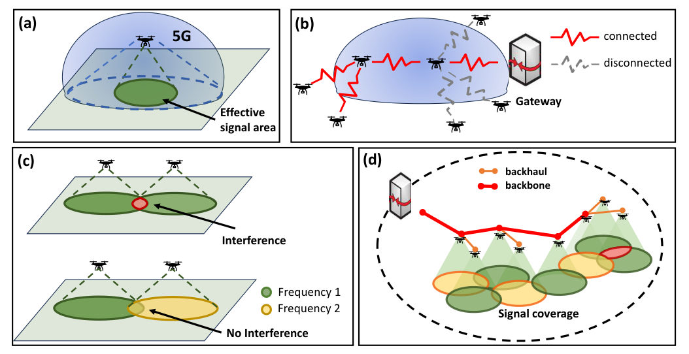
<figcaption class="paper-figure-caption"><b>Fig 1.</b> Fig. 1. Description of the connected ad-hoc network of UAVs modeled in this work. In panel (a), we show the basic building block of the network, a UAV equipped with a 5G antenna that provides coverage to the ground. The blue blob describes the full shape of the signal approximated as a sphere, while the green area shows the effective coverage provided by the UAV. Panel (b) shows the connectivity of the network. UAVs within the same blob can receive and transmit air-to-air signal to each other. Red wiggly pulses describe the backbone network, while orange ones indicate links that end there. Gray pulses indicate that it is not possible to establish a connection link between the two UAVs....</figcaption>
</figure>
<figure class="paper-figure-card">
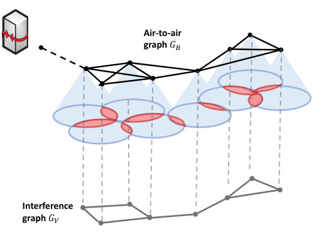
<figcaption class="paper-figure-caption"><b>Fig 2.</b> Fig. 2. Illustration of the two graphs involved in the c-BUP problem. The air-to-air graph GB is shown at the top, while the interference graph GV is shown at the bottom of the picture. A solution of this problem with V = N is shown as an example in Fig. 1 panel (d).</figcaption>
</figure>
<figure class="paper-figure-card">
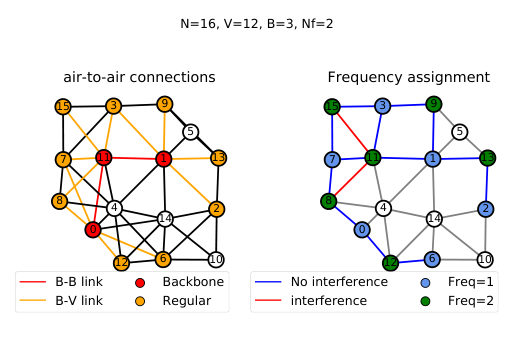
<figcaption class="paper-figure-caption"><b>Fig 3.</b> Fig. 5. Solution of the problem for the instance (16, 12, 3, 2). On the left, we represent the connectivity, while to the right we show the frequency assignment. In this case with F = 2, we notice two interference conflicts.</figcaption>
</figure>
<figure class="paper-figure-card">
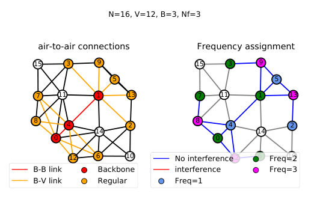
<figcaption class="paper-figure-caption"><b>Fig 4.</b> Fig. 6. Solution of the problem for the instance (16, 12, 3, 3). On the left, we represent the connectivity, while to the right we show the frequency assignment. In this case with F = 3, we notice that all the interference is avoided.</figcaption>
</figure>
<figure class="paper-figure-card">
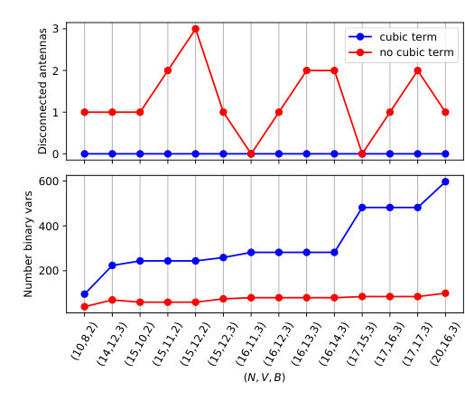
<figcaption class="paper-figure-caption"><b>Fig 5.</b> Fig. 4. Number of leaves disconnected from the backbone in the presence or absence of the cubic term for several configurations. This plot shows the importance of that term for the overall connectivity. All the configurations have been chosen in such a way that a fully connected solution is feasible, meaning that the number of connections is smaller than Cmax.</figcaption>
</figure>
</div>
<p><strong>Summary.</strong> This work tackles the critical optimization challenge of deploying UAVs for emergency communication networks by formulating it as a complex combinatorial problem. Due to the exponential scaling of classical solvers, the authors reformulate the problem into a QUBO suitable for quantum computation. The research demonstrates the potential of quantum algorithms to solve these time-sensitive, large-scale optimization problems in real-time disaster response scenarios.</p>
<p><strong>Why it may be interesting.</strong> The direct mapping of a complex, real-world combinatorial optimization problem (UAV placement) onto a QUBO framework and testing it with quantum algorithms makes it highly relevant for quantum algorithm development in applied physics.</p>
<details>
<summary>Detailed structure</summary>
<p><strong>Main problem.</strong> The paper addresses the combinatorial optimization problem of strategically deploying UAVs to establish connected communication bridges in disaster zones.</p>
<p><strong>Main result.</strong> Classical solvers exhibit exponential time-to-solution scaling, necessitating the reformulation of the problem as a QUBO suitable for quantum algorithms like the Quantum Adiabatic Algorithm (QAA).</p>
<p><strong>Method.</strong> The problem is formulated as an Integer Quadratic Program (IQP) and subsequently mapped to a QUBO, which is then analyzed using both classical solvers (CPLEX) and quantum emulation (QAA).</p>
<p><strong>Model / system.</strong> The system involves UAVs in a flying ad-hoc network (FANET) needing to maximize signal coverage and maintain connectivity via a backbone structure while mitigating interference using multi-frequency assignments.</p>
<p><strong>Key observables.</strong> Signal coverage, network connectivity (backbone/leaves), interference levels, and Time-to-Solution (TTS).</p>
<p><strong>Important parameters / regimes.</strong> Number of candidate sites ($N$), number of available drones ($V$), number of backbone nodes ($B$), and number of frequencies ($F$).</p>
<p><strong>Assumptions / limitations.</strong> The primary assumption is that quantum computing offers a scalable alternative to classical solvers for this time-critical optimization task; approximations are made regarding higher-order interference overlaps.</p>
<p><strong>Figures summary.</strong> Figures illustrate the network components (coverage, connectivity, interference) and show performance metrics for QAA on small instances, demonstrating the feasibility of quantum approaches.</p>
<p><strong>Paper structure.</strong> The paper introduces the c-BUP problem, formulates it as an IQP/QUBO, analyzes the classical computational bottlenecks (exponential TTS), and then proposes and tests the quantum adiabatic algorithm approach.</p>
</details>
<details>
<summary>Abstract</summary>
<p>We present a combinatorial optimization problem for the strategic deployment of UAVs equipped with 5G antennas to assist rescue operations in regions hit by natural disasters. Our goal is to optimize the placement of UAVs to provide coverage in flying ad-hoc networks among given candidate sites. Our formulation aims to maximize signal coverage and minimize interference while ensuring network connectivity. To mitigate interference effects, we incorporate the use of multiple frequencies. We formulate this problem as an integer quadratic program (IQP). We present numerical solutions obtained via the CPLEX solver and conduct a preliminary analysis of the problem's scalability in realistic network configurations. Our findings reveal a significant exponential increase in Time-to-Solution (TTS) as the number of sites grows, which poses a critical challenge in urgent, time-sensitive scenarios. To address this issue, approximate suboptimal solutions can be produced by enforcing a time limit on the solver. Although these solutions are not optimal, they preserve connectivity in most cases, providing a practical trade-off between solution quality and computational times that remain within feasible limits for real-time UAV redeployment. Recognizing the limitations of classical solvers in these contexts, we explore quantum computing as a promising alternative. Specifically, we reformulate the problem as a quadratic unconstrained binary optimization (QUBO) problem, suitable for most quantum algorithms. Through high-performance computing emulation, we show that the quantum adiabatic algorithm (QAA) can accurately solve small-scale instances, paving the way for future application of quantum computing to large-scale, time-critical optimization problems in disaster response.</p>
</details>
<p><sub><a href="#top">↑ back to top</a></sub></p>

<p><a id="paper-2609.01860"></a></p>
<h3 id="comments-on-the-recent-improvements-of-the-mrrw-bounds"><a href="http://arxiv.org/abs/2609.01860v1">Comments on the recent improvements of the MRRW bounds</a></h3>
<p><strong>Authors:</strong> Alexander Barg<br>
<strong>Type:</strong> theory · <strong>Category:</strong> other · <strong>PDF:</strong> <a href="https://arxiv.org/pdf/2609.01860v1">https://arxiv.org/pdf/2609.01860v1</a><br>
<strong>Analysis basis:</strong> full PDF text, analyzed in chunks</p>
<div class="figure-strip-hint">↔ Scroll figures horizontally</div>
<div class="paper-figures-scroll">
<figure class="paper-figure-card">
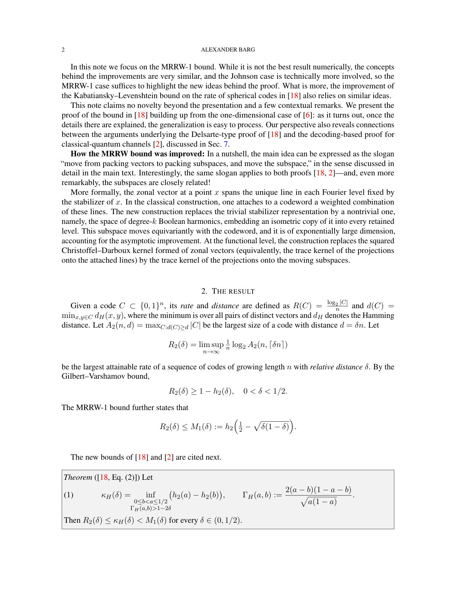
<figcaption class="paper-figure-caption"><b>Fig 1.</b> Low-resolution page preview, page 2</figcaption>
</figure>
<figure class="paper-figure-card">
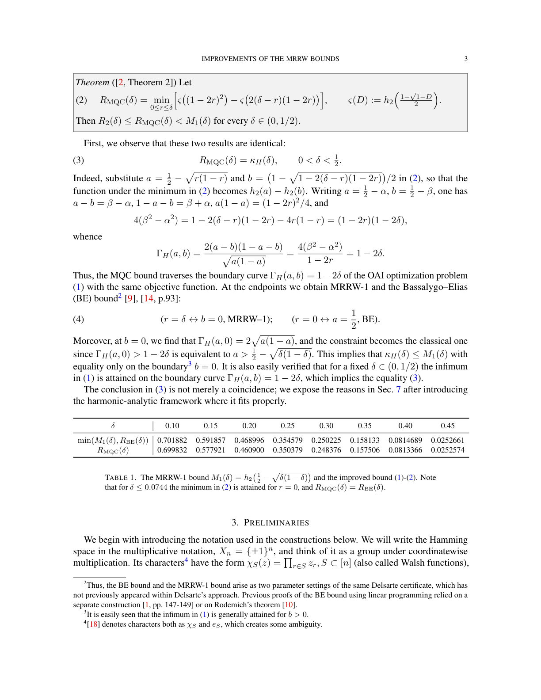
<figcaption class="paper-figure-caption"><b>Fig 2.</b> Low-resolution page preview, page 3</figcaption>
</figure>
<figure class="paper-figure-card">
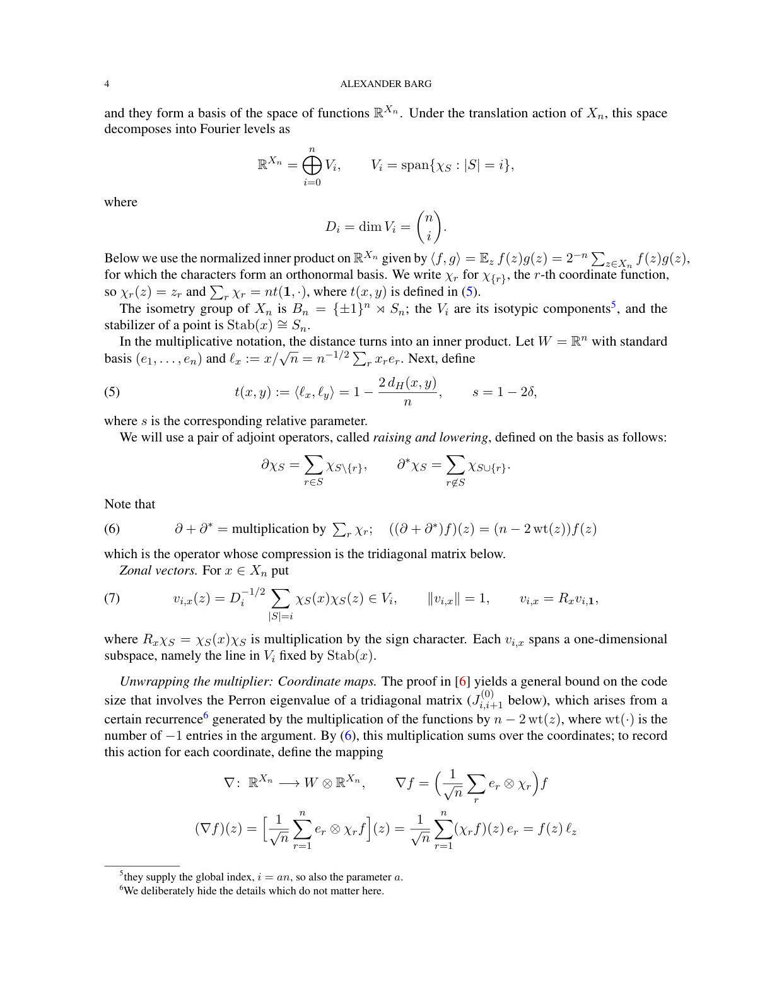
<figcaption class="paper-figure-caption"><b>Fig 3.</b> Low-resolution page preview, page 4</figcaption>
</figure>
<figure class="paper-figure-card">
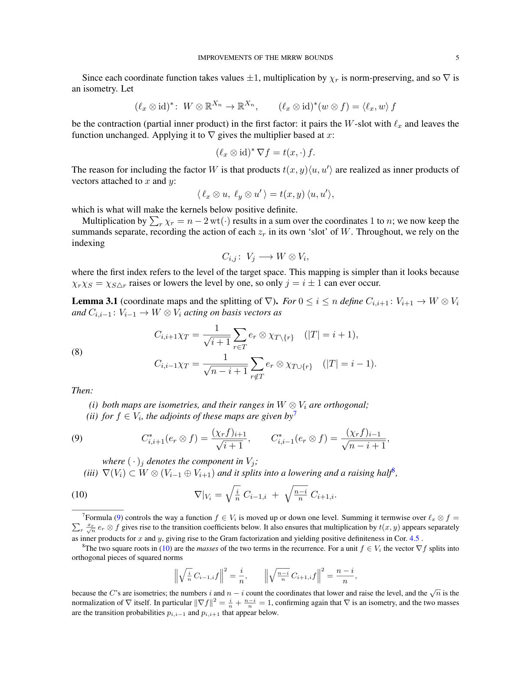
<figcaption class="paper-figure-caption"><b>Fig 4.</b> Low-resolution page preview, page 5</figcaption>
</figure>
<figure class="paper-figure-card">
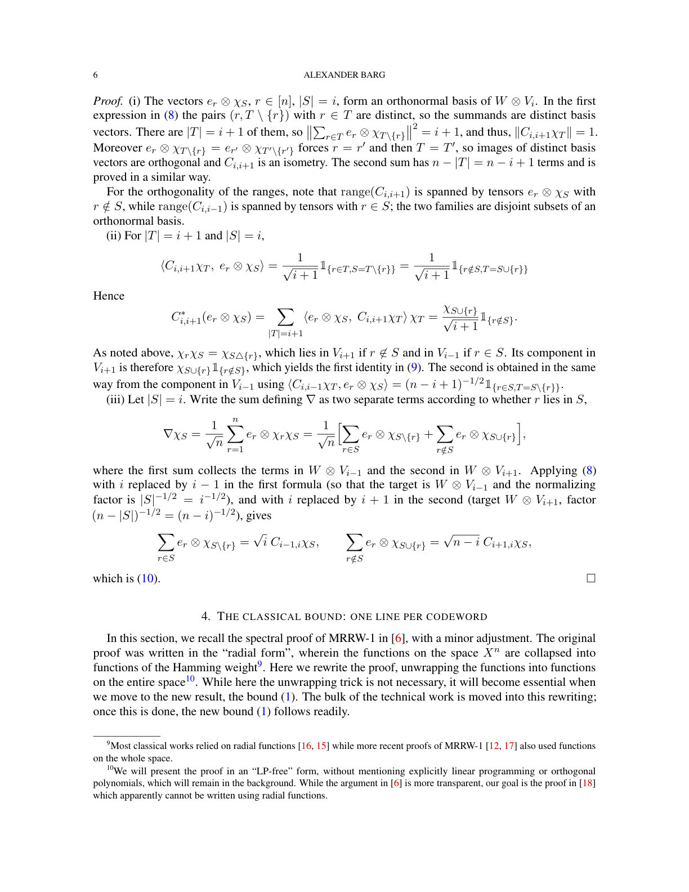
<figcaption class="paper-figure-caption"><b>Fig 5.</b> Low-resolution page preview, page 6</figcaption>
</figure>
</div>
<p><strong>Summary.</strong> This paper provides a deep mathematical analysis comparing two independent, recent improvements to the asymptotic upper bound on binary code rates (the MRRW bound). It unifies these results by showing that both proofs fundamentally rely on counting the number of associated subspaces within the ambient space. The work is significant for both coding theory and for establishing rigorous mathematical limits in related quantum information contexts.</p>
<p><strong>Why it may be interesting.</strong> While the core topic is classical coding theory, the paper draws deep parallels between classical bounds and quantum information concepts (like Holevo information and typical subspaces), making it relevant for understanding the mathematical limits of quantum communication protocols.</p>
<details>
<summary>Detailed structure</summary>
<p><strong>Main problem.</strong> The paper aims to improve the asymptotic upper bound on the rate of binary codes, known as the McEliece–Rodemich–Rumsey–Welch (MRRW) bound.</p>
<p><strong>Main result.</strong> The authors establish that two recently derived bounds, $\kappa_H(\delta)$ and $RMQC(\delta)$, are strictly better than the original MRRW-1 bound for $0 < \delta < 1/2$, and prove their equality.</p>
<p><strong>Method.</strong> The analysis involves advanced techniques from coding theory, including moving from packing vectors to packing subspaces, utilizing Delsarte certificates, and employing spectral methods on the Hamming space.</p>
<p><strong>Model / system.</strong> The mathematical model is based on binary codes $C \subset \{0, 1\}^n$ and their achievable rate $R_2(\delta)$ as a function of relative distance $\delta$. The analysis is generalized to involve subspaces attached to each codeword.</p>
<p><strong>Key observables.</strong> The primary observables are the achievable rate $R(C)$ and the relative distance $\delta$. The bounds themselves, $M_1(\delta)$, $\kappa_H(\delta)$, and $RMQC(\delta)$, are key quantities.</p>
<p><strong>Important parameters / regimes.</strong> The relative distance $\delta$ is the main parameter governing the bound. The analysis also involves parameters $a$ and $b$ when considering quantum channel analogies.</p>
<p><strong>Assumptions / limitations.</strong> The derivation relies on the multiplicative notation for the Hamming space and the use of adjoint operators to decompose function spaces. A key assumption in one part is $\Lambda > s$ for the main bound to hold.</p>
<p><strong>Figures summary.</strong> Table 1 is used to numerically compare the values of the original MRRW bound $M_1(\delta)$ against the improved bound $  ext{RMQC}(\delta)$ across various values of $\delta$, demonstrating the improvement.</p>
<p><strong>Paper structure.</strong> The paper first establishes the context of improving the MRRW bound. It then details the mathematical machinery, comparing the Delsarte certificate approach with the classical-quantum channel approach. The structure progresses from general coding theory bounds to specific spectral and harmonic-analytic derivations.</p>
</details>
<details>
<summary>Abstract</summary>
<p>The asymptotic McEliece--Rodemich--Rumsey--Welch bound (1977) limits the largest attainable rate of binary codes as a function of the relative distance. After a nearly half-century hiatus, this result was recently improved in two concurrent works, by OpenAI and by O. Alrabiah and V. Guruswami. The two arguments look entirely different, a Delsarte certificate on the one hand, a classical-quantum channel and the pretty good measurement on the other, and they yield the same bound. The purpose of this note is to explain why: in both proofs, a subspace is attached to every codeword and moved with it, and the bound counts how many such subspaces fit in the ambient space, exactly in the first case and in the probabilistic sense of typicality in the second. We also present the OpenAI proof in the language and context of coding theory, as an extension of the spectral method in which the single vector attached to a codeword is replaced by a subspace.</p>
</details>
<p><sub><a href="#top">↑ back to top</a></sub></p>

<p><a id="paper-2609.02461"></a></p>
<h3 id="computational-methods-for-photoionization-of-hmath627math-molecules-a-comparative-study"><a href="http://arxiv.org/abs/2609.02461v1">Computational methods for photoionization of H$_2$ molecules: a comparative study</a></h3>
<p><strong>Authors:</strong> Hakon Volkmann, Jannis Schürmann, Alejandro Saenz<br>
<strong>Type:</strong> theory · <strong>Category:</strong> other · <strong>PDF:</strong> <a href="https://arxiv.org/pdf/2609.02461v1">https://arxiv.org/pdf/2609.02461v1</a><br>
<strong>Analysis basis:</strong> full PDF text, analyzed in chunks</p>
<div class="figure-strip-hint">↔ Scroll figures horizontally</div>
<div class="paper-figures-scroll">
<figure class="paper-figure-card">
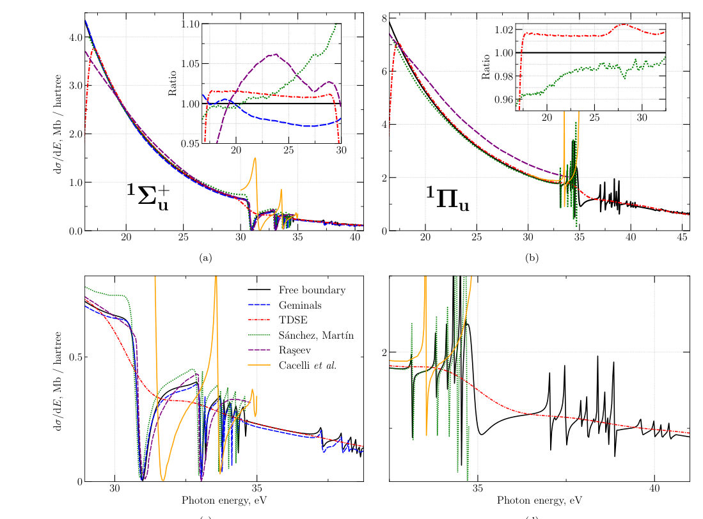
<figcaption class="paper-figure-caption"><b>Fig 1.</b> FIG. 1. Photoionization cross sections for parallel (left column, (a), (c)) and perpendicular (right column, (b), (d)) oriented H2 molecules, relative to the polarization direction. The lower figures in (c), (d) depict an enlarged plot in the resonance region, the insets show the respective ratios relative to the free-boundary result. Solid (black) lines: FB-CI; dashed (blue): CSG; dash-dotted (red): TDSE; dotted (green): reproduced from S´anchez and Mart´ın [27]; dashed (purple): reproduced from Ra¸seev [20]; solid (orange): reproduced from Cacelli et al. [26]. All curves shown are shifted in energy in order to match with the ionization potential of the FB result. Note that, due to the...</figcaption>
</figure>
<figure class="paper-figure-card">
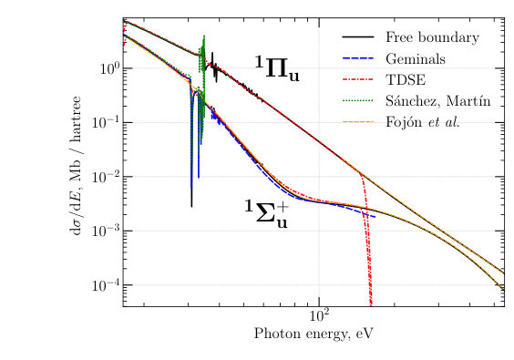
<figcaption class="paper-figure-caption"><b>Fig 2.</b> FIG. 2. As Fig. 1, but on an extended (logarithmic) energy scale. The lines are specified as in the caption of Fig. 1. The upper lines correspond to a perpendicular, the lower to the parallel-aligned molecular axis, as labelled in the figure. Ad- ditionally, the result of Foj´on et al. [30] is shown as dashed orange line.</figcaption>
</figure>
<figure class="paper-figure-card">
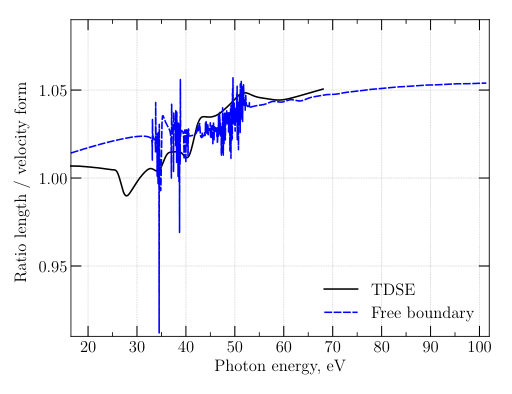
<figcaption class="paper-figure-caption"><b>Fig 3.</b> FIG. 3. Ratio of the photoionization cross sections for H2 molecules oriented perpendicular to the axis of polariza- tion, computed between length and velocity form (for the FB method) and length and velocity gauge (for the TDSE method). The solid (black) line shows the result for the TDSE computation. Dashed (blue) depicts the same for the FB ap- proach.</figcaption>
</figure>
<figure class="paper-figure-card">
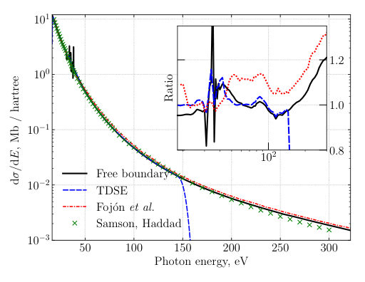
<figcaption class="paper-figure-caption"><b>Fig 4.</b> FIG. 4. Total photoionization cross sections for randomly- oriented H2 molecules. Solid (black) lines: FB-CI; dashed (blue): TDSE; dash-dotted (red): reproduced results from Foj´on et al. [30]; crosses (green): experimental results from Samson and Haddad [37]. The inset illustrates the ratio of all numerical results to the experimental reference on a logarith- mic energy scale.</figcaption>
</figure>
</div>
<p><strong>Summary.</strong> This paper presents a comprehensive comparative study of computational methods used to calculate the single-photon ionization cross sections of molecular hydrogen. By applying time-dependent, time-independent, and complex-scaling techniques, the authors demonstrate strong agreement between fundamentally different theoretical formulations. This work provides robust validation for advanced quantum methods applied to molecular photoionization.</p>
<p><strong>Why it may be interesting.</strong> This work is highly relevant to AMO physics and quantum optics as it provides rigorous, comparative benchmarks for calculating fundamental molecular properties like photoionization cross sections using state-of-the-art quantum computational techniques.</p>
<details>
<summary>Detailed structure</summary>
<p><strong>Main problem.</strong> The paper focuses on computing the single-photon ionization cross sections of molecular hydrogen ($   ext{H}_2$) in the electric dipole limit.</p>
<p><strong>Main result.</strong> The computed results show convincing mutual agreement across multiple fundamentally different computational approaches (time-dependent vs. time-independent), validating the methods used.</p>
<p><strong>Method.</strong> A comparative study employing three main computational techniques: time-dependent Schrödinger equation propagation, time-independent free-boundary methods (CI-based), and complex-scaling geminal methods.</p>
<p><strong>Model / system.</strong> The physical system is the molecular hydrogen ($    ext{H}_2$) molecule, calculated at its equilibrium internuclear distance. The calculations utilize advanced electronic structure methods based on Configuration Interaction (CI) theory.</p>
<p><strong>Key observables.</strong> Single-photon ionization cross sections ($\sigma$), ionization yield ($Y$), and optical oscillator strength (OOS) density.</p>
<p><strong>Important parameters / regimes.</strong> Equilibrium internuclear distance ($R = 1.4 	ext{ a}_0$); the calculation is performed in the electric dipole limit.</p>
<p><strong>Assumptions / limitations.</strong> The primary assumptions include the clamped-nuclei approximation and the use of various basis sets (e.g., B-splines) to discretize the continuum states.</p>
<p><strong>Figures summary.</strong> Not specified in the notes, but the text references figures for high-energy computations and tables detailing CI configuration series.</p>
<p><strong>Paper structure.</strong> The paper compares results from time-dependent, time-independent (Free-Boundary), and complex-scaling approaches to calculate the photoionization cross section, validating the consistency between these distinct theoretical formulations.</p>
</details>
<details>
<summary>Abstract</summary>
<p>Single-photon ionization cross sections of molecular hydrogen in the electric dipole limit have been computed. Both time-dependent and -independent approaches within the clamped-nuclei approximation at equilibrium internuclear distance are employed, featuring the explicit time-propagation of the time-dependent Schrödinger equation and newly implemented multi-channel configuration-interaction free-boundary as well as complex-scaling methods using an explicitly correlated geminal basis set. The found results are compared to both experimental and previously published theoretical results, showing convincing mutual agreement despite their entirely different fundamental formulations. The novel CI-based approach demonstrates fast and controllable convergence while being able to provide full channel-resolved information.</p>
</details>
<p><sub><a href="#top">↑ back to top</a></sub></p>

<p><a id="paper-2609.02668"></a></p>
<h3 id="electronic-structure-and-superconductivity-in-lamath631mathsrmath632mathcuomath633mathlamath634mathcuomath635math-artificial-high-math636math-superlattices-probed-by-hard-and-soft-x-ray-spectroscopy"><a href="http://arxiv.org/abs/2609.02668v1">Electronic Structure and Superconductivity in La$_{1.55}$Sr$_{0.45}$CuO$_4$/La$_2$CuO$_4$ Artificial High-$T_c$ Superlattices Probed by Hard and Soft X-ray Spectroscopy</a></h3>
<p><strong>Authors:</strong> U. M. Jayathilake, S. Sheikh, T. -L. Lee, C. Klewe, G. Logvenov, G. Campi, A. Bianconi, A. X. Gray<br>
<strong>Type:</strong> experiment · <strong>Category:</strong> strongly correlated electrons · <strong>PDF:</strong> <a href="https://arxiv.org/pdf/2609.02668v1">https://arxiv.org/pdf/2609.02668v1</a><br>
<strong>Analysis basis:</strong> full PDF text, analyzed in chunks</p>
<div class="figure-strip-hint">↔ Scroll figures horizontally</div>
<div class="paper-figures-scroll">
<figure class="paper-figure-card">
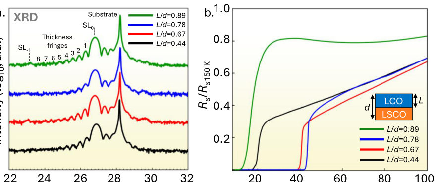
<figcaption class="paper-figure-caption"><b>Fig 1.</b> FIG. 1. (a) High-resolution θ-2θ XRD patterns of the LSCO/LCO superlattice series, showing the</figcaption>
</figure>
<figure class="paper-figure-card">
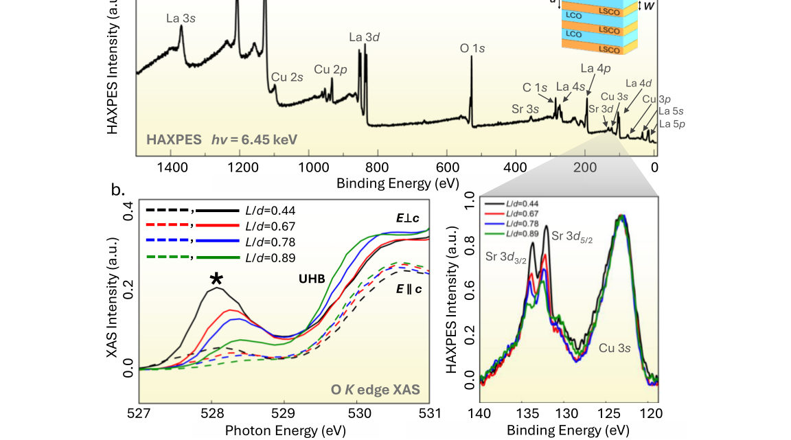
<figcaption class="paper-figure-caption"><b>Fig 2.</b> FIG. 2. (a) Wide-range HAXPES survey spectrum of the 𝐿𝑑 ⁄ = 0.44 sample, showing core-level</figcaption>
</figure>
<figure class="paper-figure-card">
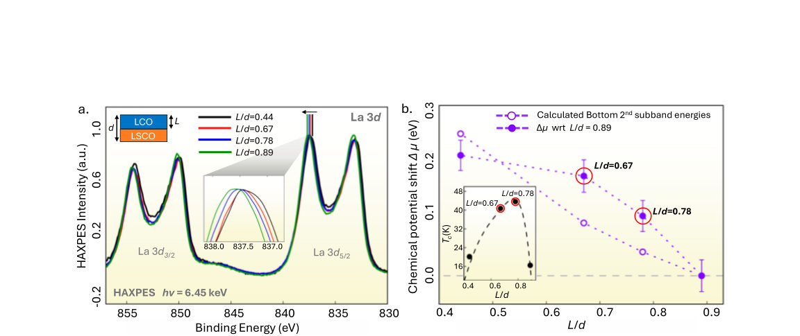
<figcaption class="paper-figure-caption"><b>Fig 3.</b> FIG. 3. (a) La 3d core-level HAXPES spectra of LSCO/LCO superlattices with different 𝐿/𝑑 ratios</figcaption>
</figure>
<figure class="paper-figure-card">
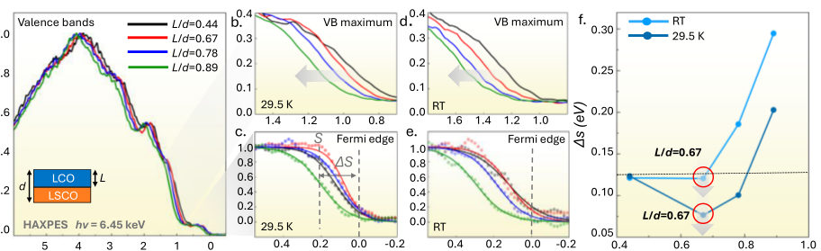
<figcaption class="paper-figure-caption"><b>Fig 4.</b> FIG. 4. (a) Valence-band HAXPES spectra of LSCO/LCO superlattices with different 𝐿𝑑 ⁄ ratios,</figcaption>
</figure>
<figure class="paper-figure-card">
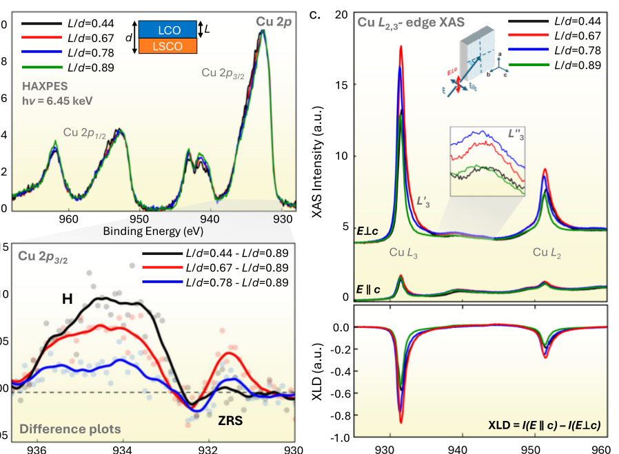
<figcaption class="paper-figure-caption"><b>Fig 5.</b> FIG. 5. (a) Cu 2p core-level HAXPES spectra of the AHTS series, showing the Cu 2p3/2 and Cu 2p1/2</figcaption>
</figure>
</div>
<p><strong>Summary.</strong> This work uses hard and soft X-ray spectroscopy to map the electronic structure of artificial high-Tc superlattices ($ ext{LSCO}/  ext{LCO}$) as the superconducting dome is tuned by changing the layer thickness ratio ($L/d$). The results demonstrate that the optimal superconducting state correlates with spectroscopic signatures indicating the system is tuned near a Van Hove Singularity, providing strong experimental evidence for the electronic mechanism driving high-Tc superconductivity in these engineered structures.</p>
<p><strong>Why it may be interesting.</strong> The use of advanced X-ray spectroscopy to map out the electronic structure evolution across a quantum-engineered superconducting phase is highly relevant for understanding unconventional superconductivity mechanisms in correlated materials.</p>
<details>
<summary>Detailed structure</summary>
<p><strong>Main problem.</strong> To determine how the electronic structure evolves across the superconducting dome in artificial high-Tc superlattices (AHTS) as a function of geometric tuning.</p>
<p><strong>Main result.</strong> Spectroscopic signatures (DOS enhancement, screening, orbital polarization) are strongest near $L/d = 0.67$, supporting a model where superconductivity emerges from tuning the system toward a Van Hove Singularity (VHS) via an electronic topological transition.</p>
<p><strong>Method.</strong> The study combines Hard X-ray Photoelectron Spectroscopy (HAXPES) and polarization-dependent Soft X-ray Absorption Spectroscopy (XAS) to probe both occupied and unoccupied electronic states.</p>
<p><strong>Model / system.</strong> The system is the $ ext{La}<em 0.45>{1.55}  ext{Sr}</em>_4$ superlattice, whose superconducting dome is tuned by varying the geometric ratio $L/d$. The analysis is guided by the Bianconi-Perali-Valletta (BPV) framework, which predicts superconductivity enhancement near a Lifshitz electronic transition.}  ext{CuO}_4/ ext{La}_2   ext{CuO</p>
<p><strong>Key observables.</strong> Leading-edge spectral weight ($\Delta S$), chemical potential ($\mu$) shifts (from $    ext{La } 3d$), local/non-local screening signatures ($  ext{Cu } 2p$), and in-plane orbital polarization ($  ext{Cu } L_{2,3}    ext{-edge}$ XLD).</p>
<p><strong>Important parameters / regimes.</strong> The geometric ratio $L/d$ (e.g., 0.44, 0.67, 0.78, 0.89) acts as the primary tuning parameter, controlling the effective hole doping and proximity to the predicted optimal doping regime.</p>
<p><strong>Assumptions / limitations.</strong> The superconducting dome behavior is governed by the BPV framework, linking superconductivity to the proximity of the chemical potential to a Van Hove Singularity (VHS) induced by the superlattice periodicity.</p>
<p><strong>Figures summary.</strong> The figures likely show systematic trends in core-level shifts, spectral weight enhancements near the Fermi level, and polarization-dependent spectral features that correlate with the measured $T_c$ dome.</p>
<p><strong>Paper structure.</strong> The paper systematically presents evidence from multiple spectroscopic techniques (HAXPES, XAS) across the series of superlattices, correlating the observed electronic structure changes (e.g., $\mu$ evolution, DOS changes) with the known superconducting dome structure.</p>
</details>
<details>
<summary>Abstract</summary>
<p>In La$_{1.55}$Sr$_{0.45}$CuO$_4$/La$_2$CuO$_4$ (LSCO/LCO) artificial high-$T_c$ superlattices (AHTS), grown by quantum material design, the superconducting dome can be tuned by varying the geometric ratio $L/d$, where $L$ is the LCO layer thickness and $d$ is the superlattice nanoscale period. Here, we combine hard X-ray photoelectron spectroscopy (HAXPES) and polarization-dependent soft X-ray absorption spectroscopy (XAS) to probe how the electronic structure evolves across the $L/d$-tuned superconducting dome. We observe systematic chemical-potential evolution across the series, together with enhanced spectral weight near the Fermi level, enhanced local and non-local screening signatures, and increased in-plane orbital polarization near the top of the dome. Together, these spectroscopic signatures provide insight into the emergence of Fano-Feshbach resonant superconductivity in the LSCO/LCO AHTS series.</p>
</details>
<p><sub><a href="#top">↑ back to top</a></sub></p>

<p><a id="paper-2609.01805"></a></p>
<h3 id="evolution-from-kitaev-to-xxz-spin-chains-via-distortion-application-to-bacomath657mathvmath658mathomath659math"><a href="http://arxiv.org/abs/2609.01805v1">Evolution from Kitaev to XXZ spin chains via distortion: Application to BaCo$_2$V$_2$O$_8$</a></h3>
<p><strong>Authors:</strong> Philip Richard, Mandev Bhullar, Hae-Young Kee<br>
<strong>Type:</strong> theory · <strong>Category:</strong> strongly correlated electrons · <strong>PDF:</strong> <a href="https://arxiv.org/pdf/2609.01805v1">https://arxiv.org/pdf/2609.01805v1</a><br>
<strong>Analysis basis:</strong> full PDF text, analyzed in chunks</p>
<div class="figure-strip-hint">↔ Scroll figures horizontally</div>
<div class="paper-figures-scroll">
<figure class="paper-figure-card">
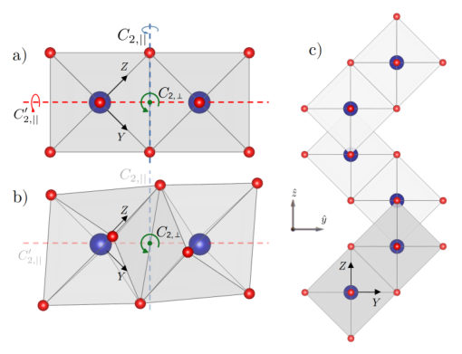
<figcaption class="paper-figure-caption"><b>Fig 1.</b> Fig. 1: Geometry of a nearest-neighbor (n.n.) X-bond in the (a) ideal and (b) distorted structures. Note that the bond center is intersected by three mutually orthogonal two-fold rotation axes. The rotation axis C2,⊥(green) enforces Γ′ = Γ′′ = 0. In the ideal structure, in addition to C2,⊥, the two additional two-fold rotation axes C2,∥and C′ 2,∥(blue and red) are present, which requires K′ = 0. In the distorted structure, the latter two symmetries are broken whereas C2,⊥is preserved, allowing only a finite K′. (c) Local XY Z coordinate system associated with an X-bond (highlighted in gray) relative to the global xyz axes. Successive bonds are related by a four-fold screw rotation about the...</figcaption>
</figure>
<figure class="paper-figure-card">
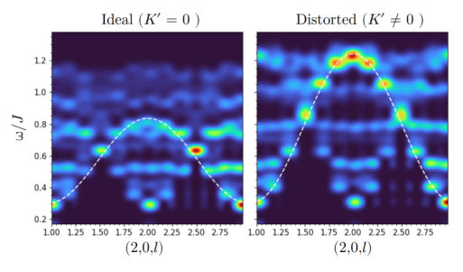
<figcaption class="paper-figure-caption"><b>Fig 2.</b> Fig. 2: Dynamical structure factor (DSF) obtained by 24-sites ED with (a) K′ = 0 and (b) K′ , 0 indicating the effects of distortion via finite K′ interaction. In both, we use J = 5.8meV, Γ = 0.6 meV, and fix ϵ = 0.56. As K′ −K becomes smaller, the domain-wall mode (white) becomes more dispersive while the gap remains nearly constant, consistent with the experimentally observed features[39] .</figcaption>
</figure>
<figure class="paper-figure-card">
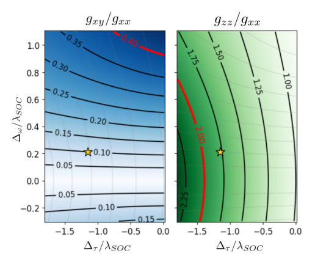
<figcaption class="paper-figure-caption"><b>Fig 3.</b> Fig. 3: In-plane (left) and out-of-plane (right) anisotropies of g-tensor components for different distortion parameters (∆µ/λSOC is fixed at -0.15). The red contour lines correspond to the value used in phenomenological descriptions (gxy/gxx ≈0.4 and gzz/gxx ≈2). We see that these cannot be obtained simultaneously for any given set of crystal field potentials (∆τ, ∆ω, ∆µ). The star indicates the set of ∆s obtained from our point charge calculation and the corresponding g-tensor components.</figcaption>
</figure>
<figure class="paper-figure-card">
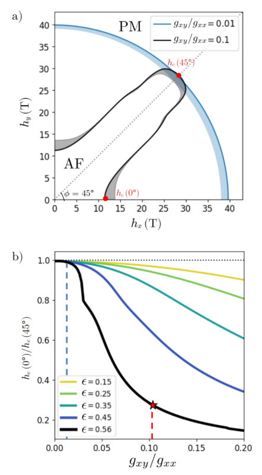
<figcaption class="paper-figure-caption"><b>Fig 4.</b> Fig. 4: (a) Phase boundary hc(ϕ) for applied transverse field [hx, hy, 0] with fixed ϵ = 0.56. Using the calculated g-tensor gxy/gxx (black), we see a large in-plane anisotropy with hc(0◦) ≈11T and hc(45◦) ≈38T indicated by the red dots. This anisotropy nearly vanishes when reducing gxy/gxx (blue). For fixed gxy/gxx, varying the site-dependent exchange (here |K −K′| ≤1meV and |Γ| ≤2meV) only slightly alters the respective phase boundary which remains roughly within the shaded region. (b) Anisotropy between ϕ = 0◦and ϕ = 45◦critical fields as a function of gxy/gxx for various values of ϵ. As ϵ gets smaller, their ratio rapidly approaches 1. The star indicates parameters calculated...</figcaption>
</figure>
</div>
<p><strong>Summary.</strong> This work develops a unified microscopic theory for understanding magnetic anisotropy in spin-orbit-coupled chains like BaCo2V2O8. By incorporating octahedral distortions, the authors show that the resulting anisotropic g-tensor, combined with renormalized exchange interactions, is necessary to explain the experimentally observed large anisotropy in the critical magnetic field. This bridges structural chemistry, electronic structure, and quantum magnetism.</p>
<p><strong>Why it may be interesting.</strong> The work provides a detailed, unified microscopic framework linking structural distortions (crystal field effects) directly to macroscopic magnetic properties (anisotropy), which is highly relevant for understanding emergent quantum magnetism in correlated materials.</p>
<details>
<summary>Detailed structure</summary>
<p><strong>Main problem.</strong> The paper aims to unify the understanding of magnetic anisotropy in spin-orbit-coupled Ising-chain antiferromagnets, resolving discrepancies between simple models and experimental observations in BaCo2V2O8.</p>
<p><strong>Main result.</strong> The large in-plane critical-field anisotropy in BaCo2V2O8 arises from the cooperative interplay between the microscopic exchange interactions (governed by the distortion-modified Kitaev-Heisenberg-Gamma model) and the crystal-field-induced g-tensor anisotropy, particularly the off-diagonal component g_xy.</p>
<p><strong>Method.</strong> The authors use a combination of microscopic theory extensions (incorporating octahedral distortions), exact diagonalization (ED) for spin dynamics, and classical analysis of effective magnetic fields derived from the g-tensor.</p>
<p><strong>Model / system.</strong> The system is BaCo2V2O8, modeled as a spin-orbit-coupled Ising-chain antiferromagnet. The Hamiltonian is extended from the Kitaev-Heisenberg-Gamma (JKΓ) model to include distortions of the CoO6 octahedra, which modifies both the exchange interactions and generates an anisotropic g-tensor.</p>
<p><strong>Key observables.</strong> Spin dynamical structure factor (DSF), critical field anisotropy h_c(phi), and the components of the g-tensor (e.g., g_xy/g_xx ratio).</p>
<p><strong>Important parameters / regimes.</strong> The ratio of exchange interactions (K/J, $\epsilon$), the distortion-induced staggered term (K'), and the ratio of g-tensor components (g_xy/g_xx).</p>
<p><strong>Assumptions / limitations.</strong> The analysis simplifies by neglecting g_xz and g_yz in the final classical picture, and the initial microscopic theory relies on point-charge calculations for the g-tensor.</p>
<p><strong>Figures summary.</strong> Figures illustrate the geometry of the bonds in ideal vs. distorted structures, compare calculated DSF with INS data, and show the phase boundary h_c(phi) demonstrating that the anisotropy is strongly dependent on the g_xy/g_xx ratio.</p>
<p><strong>Paper structure.</strong> The paper progresses by first establishing the limitations of the ideal JKΓ model (using ED/INS comparison), then introducing distortions to generate both modified exchange terms and an anisotropic g-tensor. Finally, it analyzes the interplay between these two effects to explain the critical field anisotropy.</p>
</details>
<details>
<summary>Abstract</summary>
<p>BaCo$_2$V$_2$O$_8$ is a prototypical spin-orbit-coupled Ising-chain antiferromagnet that provides a unique platform for studying field-induced quantum magnetism. Under a transverse magnetic field, it exhibits unusual magnetic properties, including an anomalous staggered magnetization and a pronounced anisotropy of the critical field with respect to the in-plane field direction. While these phenomena have been attributed phenomenologically to a site-dependent anisotropic $g$-tensor, a recent microscopic theory has shown that spin-orbit coupling naturally generates bond-dependent Heisenberg, Kitaev, and $Γ$ exchange interactions. Here, we unify these two pictures by extending the microscopic theory to incorporate distortions of the CoO$_6$ octahedra. We show that the distortions not only generate the site-dependent anisotropic $g$-tensor but also renormalize the staggered exchange interactions through a distortion-induced contribution that partially compensates the Kitaev-derived staggered term. Using point-charge calculations to estimate the $g$-tensor of BaCo$_2$V$_2$O$_8$, we demonstrate that the strong anisotropy of the critical field originates from the combined effects of the modified exchange interactions and the anisotropic $g$-tensor. Our work provides a unified microscopic framework for understanding the magnetic anisotropy of spin-orbit-coupled Ising-chain materials.</p>
</details>
<p><sub><a href="#top">↑ back to top</a></sub></p>

<p><a id="paper-2609.02113"></a></p>
<h3 id="logarithmic-scale-variational-quantum-eigensolver-for-off-lattice-protein-structure-prediction-in-continuous-torsional-angle-space"><a href="http://arxiv.org/abs/2609.02113v1">Logarithmic-scale variational quantum eigensolver for off-lattice protein structure prediction in continuous torsional angle space</a></h3>
<p><strong>Authors:</strong> Fabio Cumbo, Bryan Raubenolt, Varun Puram, Natalie Katzenmeyer, Jayadev Joshi, Daniel Blankenberg<br>
<strong>Type:</strong> both · <strong>Category:</strong> quantum information and computing · <strong>PDF:</strong> <a href="https://arxiv.org/pdf/2609.02113v1">https://arxiv.org/pdf/2609.02113v1</a><br>
<strong>Analysis basis:</strong> full PDF text, analyzed in chunks</p>
<div class="figure-strip-hint">↔ Scroll figures horizontally</div>
<div class="paper-figures-scroll">
<figure class="paper-figure-card">
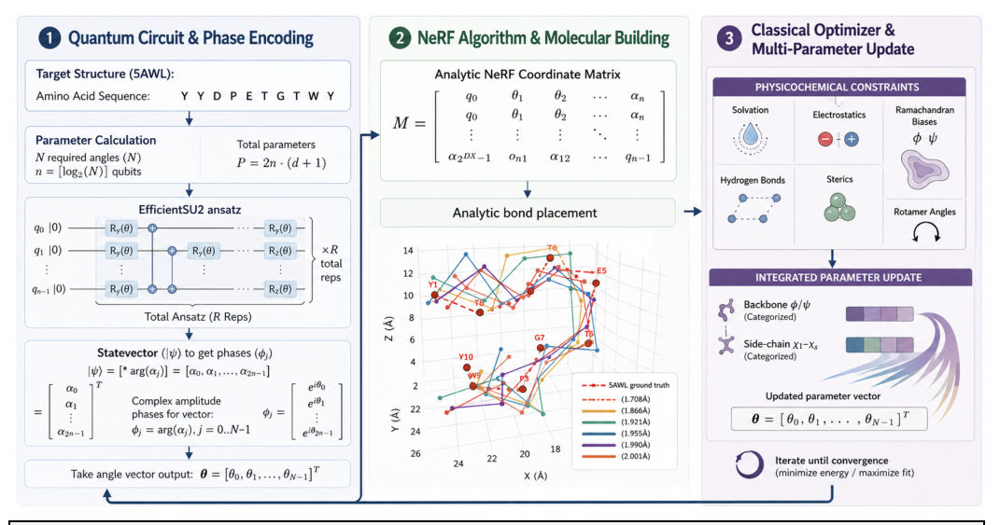
<figcaption class="paper-figure-caption"><b>Fig 1.</b> Figure 1: Schematic overview of the hybrid quantum-classical continuous-space protein structure prediction pipeline. The closed-loop VQE architecture consists of four interconnected phases. (I) Quantum State Generation: an n-qubit parameterized quantum circuit, scaled logarithmically relative to the torsional degrees of freedom, generates a complex statevector. The gauge-fixed relative phases of the resulting amplitudes are extracted to directly represent continuous molecular torsion angles in the</figcaption>
</figure>
<figure class="paper-figure-card">
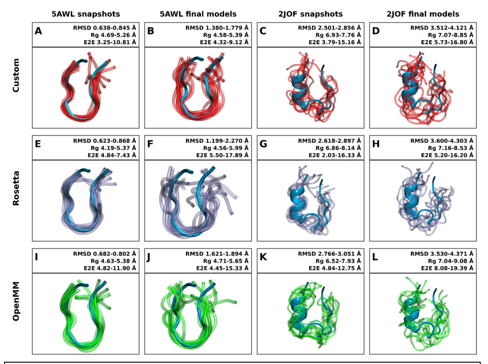
<figcaption class="paper-figure-caption"><b>Fig 2.</b> Figure 2: Structural overlays of the 10 lowest RMSD snapshots and 10 final models for each protein, model class, and energy function. Rows correspond to energy functions: custom (A-D), Rosetta (E-H), and OpenMM (I-L). Columns show 5AWL snapshots, 5AWL final models, 2JOF snapshots, and 2JOF final models, respectively. Each panel reports the RMSD range for the 10 displayed structures. Predicted structures are colored by energy function, with experimental reference structures shown in cyan.</figcaption>
</figure>
<figure class="paper-figure-card">
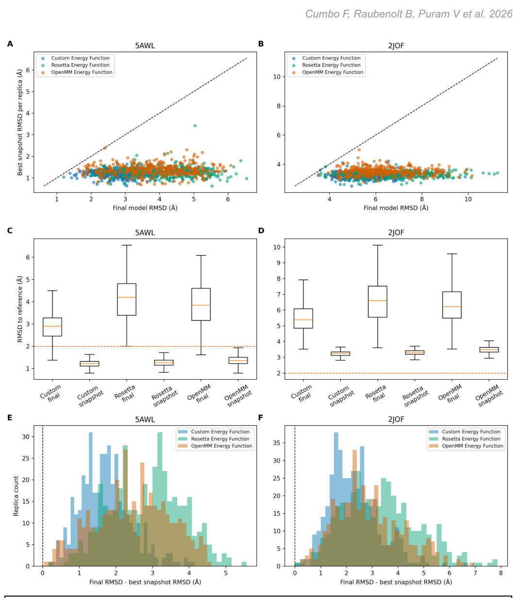
<figcaption class="paper-figure-caption"><b>Fig 3.</b> Figure 3: Comparison final replica models with the best retained snapshot from the same replica. Panels A and B plot final-model RMSD versus best-snapshot RMSD for 5AWL and 2JOF, respectively; points below the diagonal indicate replicas where snapshot mining recovered a lower-RMSD structure than the final selected model. Panels C and D summarize the corresponding RMSD distributions for final models and per-replica best snapshots across each energy function, with the 2.0 Å horizontal line marking the native-like threshold. Panels E and F show the per-replica RMSD improvement, defined as final-model RMSD minus best-snapshot RMSD, for 5AWL and 2JOF. In all snapshot panels, the snapshot value...</figcaption>
</figure>
<figure class="paper-figure-card">
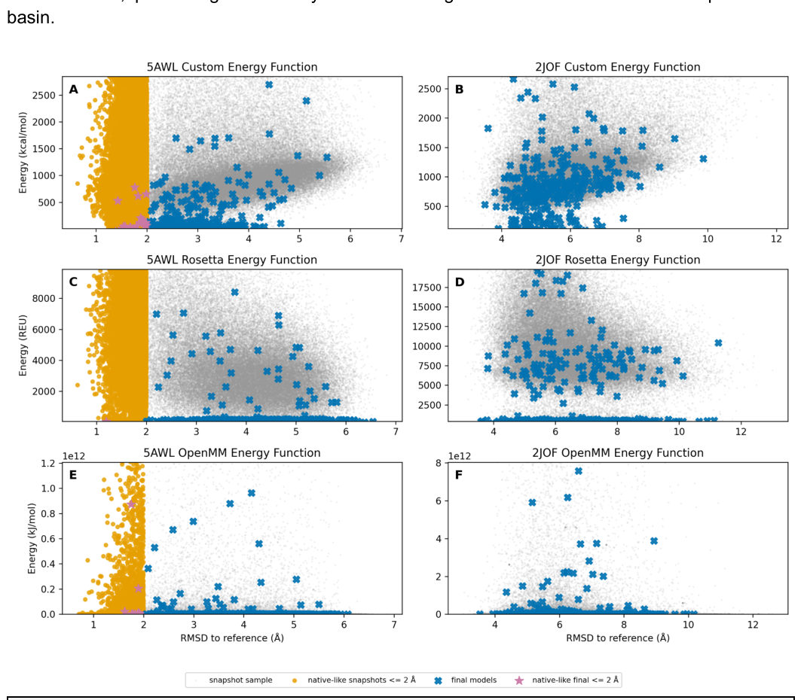
<figcaption class="paper-figure-caption"><b>Fig 4.</b> Figure 4: Raw-energy folding-funnel landscapes. The raw energy units are kcal/mol for the custom energy function, Rosetta energy units (REU) for Rosetta, and kJ/mol for OpenMM. These panels test whether each backend’s own scoring objective produces an internal funnel toward lower RMSD, but raw y-values should not be compared quantitatively across energy functions because the scales and definitions differ.</figcaption>
</figure>
<figure class="paper-figure-card">
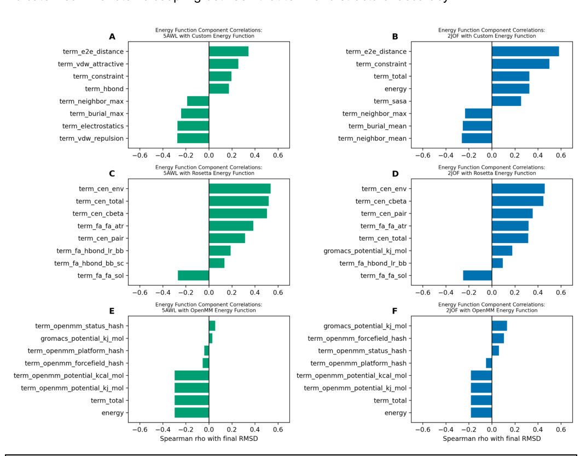
<figcaption class="paper-figure-caption"><b>Fig 5.</b> Figure 5: Final-mode energy-term correlations. The strongest final-model energy-term Spearman correlations with RMSD for each protein and energy function. Panels follow the same row-major layout as</figcaption>
</figure>
</div>
<p><strong>Summary.</strong> This paper introduces a groundbreaking quantum algorithm for protein structure prediction that moves beyond restrictive lattice models into continuous, all-atom space. It achieves this by encoding the exponentially large conformational space into a quantum statevector, requiring only logarithmic qubits relative to the number of torsional angles. The success on benchmark proteins proves the feasibility of this scalable, hybrid quantum-classical approach for biophysics.</p>
<p><strong>Why it may be interesting.</strong> This work directly tackles the mapping of continuous physical degrees of freedom (torsions) onto discrete quantum computational resources (qubits/phases), which is a major theoretical challenge in quantum simulation for molecular physics.</p>
<details>
<summary>Detailed structure</summary>
<p><strong>Main problem.</strong> Protein structure prediction (PSP) is computationally challenging due to the vast conformational space, and current quantum methods are limited to simplistic lattice models.</p>
<p><strong>Main result.</strong> The authors demonstrated a novel, scalable quantum algorithm capable of performing all-atom, continuous-space PSP using only O(log N) qubits for N torsional degrees of freedom.</p>
<p><strong>Method.</strong> They propose a logarithmic-scale Variational Quantum Eigensolver (VQE) where molecular torsions are encoded into the relative phases of a quantum statevector, which are then decoded to reconstruct 3D coordinates.</p>
<p><strong>Model / system.</strong> The system is the protein structure, modeled by its backbone and sidechain torsional angles. The approach uses a hybrid quantum-classical pipeline, employing a custom Hamiltonian derived from molecular mechanics terms to evaluate the energy.</p>
<p><strong>Key observables.</strong> RMSD (Root Mean Square Deviation) for structural comparison, and the total scalar energy calculated by the hybrid Hamiltonian.</p>
<p><strong>Important parameters / regimes.</strong> The qubit scaling is $\mathcal{O}(\log_2 N)$ for $N$ torsional degrees of freedom. The method uses a multi-stage relaxation curriculum to mitigate barren plateaus.</p>
<p><strong>Assumptions / limitations.</strong> The primary assumptions involve the feasibility of mapping continuous physical constraints into circuit depth constraints and the reliance on a probability-CDF decoder due to the non-observability of relative phases on NISQ hardware.</p>
<p><strong>Figures summary.</strong> The figures schematically illustrate the four-stage hybrid quantum-classical pipeline: quantum state generation from parameters, differentiable coordinate reconstruction from phases, physical energy evaluation, and variational optimization.</p>
<p><strong>Paper structure.</strong> The paper introduces the limitations of existing PSP methods, details the novel logarithmic-scale VQE architecture (QTF), outlines the hybrid quantum-classical pipeline, presents benchmarks on specific proteins (chignolin, Trp-cage), and discusses hardware implementation and future scalability.</p>
</details>
<details>
<summary>Abstract</summary>
<p>Classical and current quantum approaches to protein structure prediction (QPSP) face limitations, notably massive qubit requirements restricting near-term models to simplistic on-lattice simulations. We propose a logarithmic-scale variational quantum eigensolver (VQE) that reduces qubit requirements for N torsional degrees of freedom to O(log2N), enabling off-lattice, all-atom simulations. Our architecture extracts molecular torsions from relative phases in statevector simulations. On quantum hardware, a decoder maps the empirical cumulative distribution function (CDF) from basis-state probabilities to bounded torsional variables. These feed a classical algorithm to build heavy-atom coordinates. We use an EfficientSU2 ansatz and multi-stage relaxation to mitigate barren plateaus. Structures are evaluated via a custom hybrid quantum-classical Hamiltonian, alongside Rosetta and OpenMM benchmarks.   Evaluation on chignolin and Trp-cage yielded native-like conformations. Chignolin reached a 0.623 Å Cα RMSD in retained snapshots and 1.199 Å in final models; Trp-cage achieved a 2.501 Å RMSD among snapshots (3.512 Å in final models). Execution on IBM processors (ibm_cleveland, ibm_miami) successfully recovered native-like structures with a best RMSD of 1.758 Å. The custom energy function performed best overall, though energy-ranking imbalances persisted across sampled landscapes for all functions.   This introduces the first all-atom, continuous-space quantum algorithm for QPSP. By converting physical qubit constraints into circuit depth constraints, it proves high-resolution prediction is feasible with exponentially fewer qubits. Despite current limits like computational overhead and energy function sensitivity, it establishes a scalable foundation for hybrid quantum biophysics.</p>
</details>
<p><sub><a href="#top">↑ back to top</a></sub></p>

<p><a id="paper-2609.01970"></a></p>
<h3 id="maximal-velocity-deficit-under-a-finite-support-constraint-in-hard-wall-half-line-continuous-time-quantum-walk"><a href="http://arxiv.org/abs/2609.01970v1">Maximal-velocity deficit under a finite-support constraint in hard-wall half-line continuous-time quantum walk</a></h3>
<p><strong>Authors:</strong> Kangqiao Liu, Deyou Chen<br>
<strong>Type:</strong> theory · <strong>Category:</strong> statistical mechanics · <strong>PDF:</strong> <a href="https://arxiv.org/pdf/2609.01970v1">https://arxiv.org/pdf/2609.01970v1</a><br>
<strong>Analysis basis:</strong> full PDF text, analyzed in chunks</p>
<div class="figure-strip-hint">↔ Scroll figures horizontally</div>
<div class="paper-figures-scroll">
<figure class="paper-figure-card">
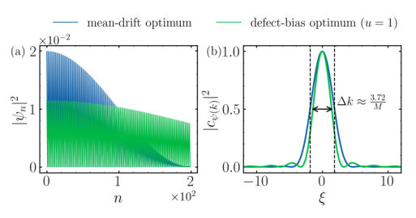
<figcaption class="paper-figure-caption"><b>Fig 1.</b> FIG. 1. Optimal finite-M states in (a) real space and (b) near the maximal-velocity peak. We set J = 1 and M = 200. The mean-drift optimum is the principal eigenvector of A(M) in Eq. (23). The defect-bias optimum is the principal eigenvector of A(M) u in Eq. (34) at u = 1. (a) shows the real-space proba- bility |ψn|2. (b) shows the near-peak spectral weight |cψ(k)|2</figcaption>
</figure>
<figure class="paper-figure-card">
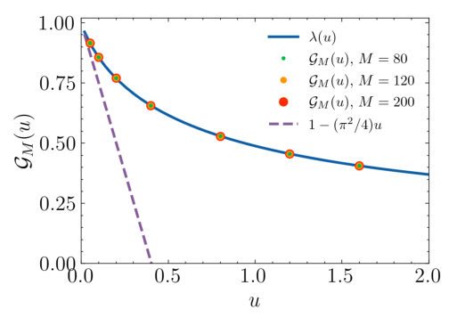
<figcaption class="paper-figure-caption"><b>Fig 2.</b> FIG. 2. Scaling function for the optimized near-peak statistics. The solid curve is the continuum principal eigenvalue λ(u) = λmax(Tu) computed from the Fourier-side kernel (46). Markers show finite-M values of GM(u) obtained by diagonalizing the discrete matrix A(M) u in (34). The dashed line is the small-u expansion 1 −(π2/4)u.</figcaption>
</figure>
<figure class="paper-figure-card">
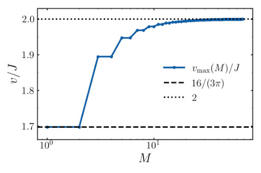
<figcaption class="paper-figure-caption"><b>Fig 3.</b> FIG. 3. Coherent optimum versus the site-diagonal incoherent reference for J = 1. The solid line is vmax(M)/J obtained by diagonalizing A(M). The dashed horizontal line is vmax inc /J = 16/(3π) from Eq. (29). The dotted horizontal line marks the ballistic front 2J/J = 2.</figcaption>
</figure>
<figure class="paper-figure-card">
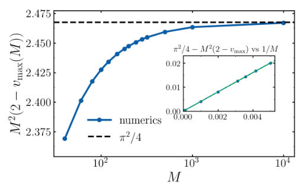
<figcaption class="paper-figure-caption"><b>Fig 4.</b> FIG. 4. Optimized mean drift for J = 1. The main panel shows the rescaled estimator M 2(2 −vmax(M)) versus M obtained from diagonalizing A(M). The dashed line is the constant limit π2/4. The inset shows the residual π2/4 −M 2(2 −vmax(M)) versus 1/M.</figcaption>
</figure>
</div>
<p><strong>Summary.</strong> This paper investigates the speed limit of a quantum walker confined to a half-line lattice by constraining its initial state to $M$ sites. It shows that the maximal achievable drift velocity approaches the theoretical maximum with a predictable, inverse-square deficit scaling with $M$. The methodology involves advanced spectral analysis, moving from finite matrices to a continuum operator limit.</p>
<p><strong>Why it may be interesting.</strong> This work provides rigorous spectral methods to analyze transport phenomena in quantum systems constrained by boundaries, connecting discrete spectral problems to continuous field theory limits.</p>
<details>
<summary>Detailed structure</summary>
<p><strong>Main problem.</strong> The paper determines how close the maximal mean drift velocity of a continuous-time quantum walk (CTQW) on a hard-wall half-line can approach the theoretical maximal front speed when the initial state is restricted to a finite number of sites ($M$).</p>
<p><strong>Main result.</strong> The maximal mean drift velocity exhibits a deficit that decays with an inverse-square dependence on $M$, with the continuum limit yielding a constant prefactor of $\pi^2/4$.</p>
<p><strong>Method.</strong> The analysis uses moment-generating functions and spectral theory, reducing the optimization problem to finding the largest eigenvalue of explicit, finite-dimensional Hermitian matrices, which is then analyzed in the continuum limit.</p>
<p><strong>Model / system.</strong> The system is a continuous-time quantum walk (CTQW) evolving on the hard-wall half-line ($\mathbb{Z}_{\ge 0}$) governed by a nearest-neighbor Hamiltonian. The dynamics are analyzed using the sine transform and weak-limit theorems.</p>
<p><strong>Key observables.</strong> Maximal mean drift velocity ($ ext{vmax}(M)$), asymptotic velocity random variable ($V$), and the moment-generating function ($G_\psi(s)$).</p>
<p><strong>Important parameters / regimes.</strong> Finite support size $M$, the bulk dispersion velocity ($2J$), and the continuum scaling variable $u$.</p>
<p><strong>Assumptions / limitations.</strong> The analysis relies on stationary-phase estimates and the validity of weak-limit theorems for CTQWs, particularly in the large-$M$ limit.</p>
<p><strong>Figures summary.</strong> The notes do not provide a summary of figures, but mention numerical verification of both the finite-$M$ spectral formulation and the predicted scaling.</p>
<p><strong>Paper structure.</strong> The paper progresses by first defining the system and establishing the bulk limit, then characterizing the finite-$M$ spectral problem via matrix diagonalization, followed by deriving the continuum scaling limit, and finally extracting the constant prefactor.</p>
</details>
<details>
<summary>Abstract</summary>
<p>Continuous-time quantum walks on a lattice spread ballistically and converge to a limiting distribution for the rescaled position. On the hard-wall half line the boundary reflects the walker but does not change the bulk dispersion, so the ballistic front remains set by the maximal group velocity. We ask how close one can get to this front when the initial state is constrained to occupy only the first $M$ sites. We show that optimizing the moment-generating function of the limiting-velocity distribution over this finite-support class reduces to the principal eigenvalue of an explicit $M\times M$ Hermitian matrix, which yields the optimal state by direct diagonalization. For large $M$, a near-front scaling limit produces a continuum description that controls the entire peak region. In particular, the maximal mean drift approaches the front with an inverse-square deficit in $M$ and a constant prefactor $π^2/4$. Numerical results verify both the finite-$M$ spectral formulation and the predicted scaling.</p>
</details>
<p><sub><a href="#top">↑ back to top</a></sub></p>

<p><a id="paper-2609.01901"></a></p>
<h3 id="need-one-bell-pair-only-nobol-for-low-overhead-fault-tolerant-quantum-computing"><a href="http://arxiv.org/abs/2609.01901v1">Need One Bell-pair Only (NOBOL) for Low-Overhead Fault-Tolerant Quantum Computing</a></h3>
<p><strong>Authors:</strong> Sean Grzenda, Shahram Babaie, Chunming Qiao<br>
<strong>Type:</strong> theory · <strong>Category:</strong> quantum information and computing · <strong>PDF:</strong> <a href="https://arxiv.org/pdf/2609.01901v1">https://arxiv.org/pdf/2609.01901v1</a><br>
<strong>Analysis basis:</strong> full PDF text, analyzed in chunks</p>
<div class="figure-strip-hint">↔ Scroll figures horizontally</div>
<div class="paper-figures-scroll">
<figure class="paper-figure-card">
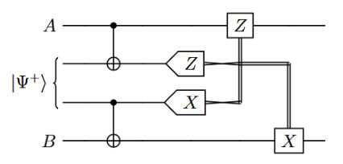
<figcaption class="paper-figure-caption"><b>Fig 1.</b> Fig. 1: Remote CNOT operation between A and B. A and B are physical qubits residing on two locations, e.g. QPUs. |Φ+⟩ is a Bell pair state distributed between the two locations.</figcaption>
</figure>
<figure class="paper-figure-card">
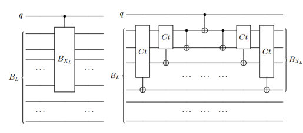
<figcaption class="paper-figure-caption"><b>Fig 2.</b> Fig. 2: CNOT circuit with single qubit as control. (a) The desired CNOT operation; q is the control and BL is the target. (b) The proposed method; only qubits within BXL need to be acted upon. The method is comprised entirely of CNOT gates. The target locations and a few controls are fixed, as shown in the figure, but most of the control qubits for each target have several possible locations. The Ct rectangle denotes all possible locations for the control qubit, with an implicit requirement for symmetry in their locations in the circuit.</figcaption>
</figure>
<figure class="paper-figure-card">

<figcaption class="paper-figure-caption"><b>Fig 3.</b> Fig. 3: Depth Optimal CNOT for |BXL| = 8</figcaption>
</figure>
<figure class="paper-figure-card">

<figcaption class="paper-figure-caption"><b>Fig 4.</b> Fig. 6: Depth Optimal CZ for |AZL| = 8</figcaption>
</figure>
<figure class="paper-figure-card">

<figcaption class="paper-figure-caption"><b>Fig 5.</b> Fig. 5: CZ circuit with single qubit. (a) The desired CZ circuit between q′ and AL. (b) The proposed CZ method; it is comprised of CNOT gates and a single CZ gate. The control locations for each CNOT gate are given. However, for most of the CNOT gates, there are several possible target locations for each control. The Tg rectangles denote the possible qubit locations, with an implicit requirement for symmetry in their locations in the circuit.</figcaption>
</figure>
</div>
<p><strong>Summary.</strong> This paper introduces NOBOL, a protocol to perform logical CNOT gates between distant qubits using only one Bell pair, circumventing the high resource overhead associated with current fault-tolerant methods. By restricting operations to small logical operator subsets, NOBOL offers a scalable and code-agnostic solution for large-scale quantum computation architectures. This significantly advances the feasibility of distributed quantum networking.</p>
<p><strong>Why it may be interesting.</strong> While focused on abstract quantum computation protocols, the resource management and error containment strategies discussed (e.g., stabilizing stabilizers) are highly relevant to designing physical quantum hardware architectures.</p>
<details>
<summary>Detailed structure</summary>
<p><strong>Main problem.</strong> The primary challenge addressed is significantly reducing the overhead associated with performing logical CNOT operations between distant qubits in fault-tolerant quantum computation.</p>
<p><strong>Main result.</strong> The authors propose NOBOL, a novel protocol that achieves the logical CNOT using only a single pre-shared Bell pair, drastically reducing the resource overhead compared to previous linear or quadratic scaling methods.</p>
<p><strong>Method.</strong> The method leverages the fact that the operation can be restricted to acting only on the logical X or Z operator subsets of the qubits, which are assumed to be much smaller than the full code block size.</p>
<p><strong>Model / system.</strong> The work is situated in the context of fault-tolerant quantum computation using arbitrary CSS codes, applicable to both monolithic and distributed quantum processing units (QPUs).</p>
<p><strong>Key observables.</strong> Logical CNOT operation success, resource overhead (number of Bell pairs/SWAP gates), and circuit depth.</p>
<p><strong>Important parameters / regimes.</strong> The size of the logical operator subsets ($ au$), the code distance ($d$), and the physical link fidelity ($p_{    ext{link}}$).</p>
<p><strong>Assumptions / limitations.</strong> The method assumes that the logical CNOT can be realized by interacting only with the small subsets of physical qubits corresponding to the logical operators, and that error containment procedures can be effectively implemented.</p>
<p><strong>Figures summary.</strong> Figures illustrate the remote CNOT operation using a distributed Bell pair and show the evolution of surface code stabilizers during the CNOT circuit, distinguishing between different stabilizer types.</p>
<p><strong>Paper structure.</strong> The paper first establishes the high overhead of remote operations, introduces NOBOL as a solution requiring only one Bell pair, details the circuit realizations (including depth-optimal circuits), and concludes with effective methods for containing error propagation.</p>
</details>
<details>
<summary>Abstract</summary>
<p>Fault-tolerant quantum computation fundamentally relies on encoding a logical qubit into a structured block of physical qubits, typically in the tens to hundreds. As a trade-off for improved fault-tolerance, logical gate operations will incur a linear overhead in terms of both the amount of time and quantum resources than before. For example, in monolithic quantum computing, performing a gate operation on two distant logical qubits will first require using a linear number of SWAP operations in order to move the logical qubits next to each other; while in distributed quantum computing, doing so will first require a linear number of ancilla qubits in order to form entanglement connections (or a logical Bell pair).   In this paper, we focus on significantly reducing the overhead involved in logical CNOT operations, a fundamental primitive. We propose NOBOL, a novel approach that requires only one Bell pair to perform a logical CNOT operation on two distant qubits encoded in arbitrary CSS codes. More importantly, NOBOL only requires performing gate operations on the logical X or Z operator subsets of the logical qubits. For many CSS codes, such as the surface code, these subsets are significantly smaller than the size of the code itself. In this paper, we describe various circuit realizations of NOBOL, including a depth-optimal circuit with logarithmic depth in terms of the size of the logical operators. Finally, we propose effective methods to contain error propagation without incurring much additional overhead.   Since NOBOL can be effectively applied to a wide range of quantum error-correcting (QEC) codes and, in addition, is agnostic to qubit modalities and effective for various architectures, including those based on either a monolithic QPU or distributed QPUs.</p>
</details>
<p><sub><a href="#top">↑ back to top</a></sub></p>

<p><a id="paper-2609.01969"></a></p>
<h3 id="observation-of-g-wave-altermagnetic-multipole"><a href="http://arxiv.org/abs/2609.01969v1">Observation of g-wave altermagnetic multipole</a></h3>
<p><strong>Authors:</strong> Ryo Misawa, Rikuto Oiwa, Shunsuke Kitou, Tatsuya Miki, Motohiko Ezawa, Weiyi Yun, Rinsuke Yamada, Chihaya Koyama, J. Alberto Rodríguez Velamazán, Kamil K. Kolincio, Navid Qureshi, Elina Zhakina, Yuiga Nakamura, Jan Masell, Ilya Belopolski, Taka-hisa Arima, Yusuke Nomura, Satoru Hayami, Max Hirschberger<br>
<strong>Type:</strong> both · <strong>Category:</strong> strongly correlated electrons · <strong>PDF:</strong> <a href="https://arxiv.org/pdf/2609.01969v1">https://arxiv.org/pdf/2609.01969v1</a><br>
<strong>Analysis basis:</strong> full PDF text, analyzed in chunks</p>
<div class="figure-strip-hint">↔ Scroll figures horizontally</div>
<div class="paper-figures-scroll">
<figure class="paper-figure-card">

<figcaption class="paper-figure-caption"><b>Fig 1.</b> FIG. 1. Multipole description of g-wave altermagnetism. a, Concept of g-wave alter-</figcaption>
</figure>
<figure class="paper-figure-card">

<figcaption class="paper-figure-caption"><b>Fig 2.</b> FIG. 2. Real-space visualization of valence electron density (VED) distribution by</figcaption>
</figure>
<figure class="paper-figure-card">

<figcaption class="paper-figure-caption"><b>Fig 3.</b> FIG. 3. Direct observation of anisotropic valence electron density (VED) in a g-wave</figcaption>
</figure>
<figure class="paper-figure-card">

<figcaption class="paper-figure-caption"><b>Fig 4.</b> FIG. 4. Multipole decomposition of g-wave altermagnetic VED. a,b, Experimental VED</figcaption>
</figure>
<figure class="paper-figure-card">

<figcaption class="paper-figure-caption"><b>Fig 5.</b> FIG. 5. Ferroic order of magnetic multipoles probed by polarized neutron diffraction.</figcaption>
</figure>
</div>
<p><strong>Summary.</strong> This paper reports the direct experimental observation of a $g$-wave electric multipole in the altermagnet CrSb using synchrotron X-ray diffraction. By analyzing the directional anisotropy of the Valence Electron Density, the authors confirm the existence of this higher-order multipole, establishing a real-space fingerprint of altermagnetism. This work connects subtle electric multipole order to measurable magnetic phenomena, advancing the field of quantum materials.</p>
<p><strong>Why it may be interesting.</strong> The work provides a concrete, measurable link between higher-order electric multipole moments (like the $g$-wave hexadecapole) and observable electronic/magnetic properties, which is crucial for understanding exotic magnetic states beyond simple dipole moments.</p>
<details>
<summary>Detailed structure</summary>
<p><strong>Main problem.</strong> To directly visualize and establish a real-space fingerprint of altermagnetism, specifically the hidden multipole order, in a material like CrSb.</p>
<p><strong>Main result.</strong> The study successfully observed a pronounced, alternating directional anisotropy in the Valence Electron Density (VED) around Cr sites, confirming the presence of the predicted $g$-wave electric multipole order.</p>
<p><strong>Method.</strong> The research combines high-energy synchrotron X-ray diffraction with Valence Electron Density (VED) analysis, complemented by theoretical modeling using symmetry-adapted Wannier functions and polarized neutron diffraction measurements.</p>
<p><strong>Model / system.</strong> The physical system is the altermagnet CrSb. The theoretical framework models the electronic structure using a tight-binding Hamiltonian expanded in terms of electric multipoles ($\hat{Q}_{lm}$), relating the $g$-wave multipole to the spin splitting.</p>
<p><strong>Key observables.</strong> Valence Electron Density (VED) anisotropy, the $g$-wave multipole term ($\alpha$), and the magnetic flipping ratio (FR) from polarized neutron diffraction.</p>
<p><strong>Important parameters / regimes.</strong> The $g$-wave multipole amplitude ($ ext{Q}_{43}$), which was quantified to $0.21(6)$.</p>
<p><strong>Assumptions / limitations.</strong> The VED is approximated as a linear combination of electric multipoles, and the spin splitting is modeled as being proportional to the $g$-wave multipole amplitude.</p>
<p><strong>Figures summary.</strong> Figures illustrate the predicted antiferroic pattern of electric hexadecapoles, the crystal structure of CrSb, and the experimentally observed VED anisotropy around the Cr sublattices.</p>
<p><strong>Paper structure.</strong> The paper progresses from establishing the theoretical necessity of higher-order multipoles in altermagnets, to presenting the experimental VED measurements confirming the $g$-wave multipole, and finally linking this electric order to measurable magnetic properties like spin splitting via polarized neutron diffraction.</p>
</details>
<details>
<summary>Abstract</summary>
<p>Over the past few years, altermagnets have emerged as a new class of collinear magnets with broken time-reversal symmetry, offering novel opportunities for spintronics beyond conventional magnets. Rather than from net magnetization, as in ferromagnets, the unconventional time-reversal symmetry breaking of altermagnets originates from antiferroic magnetic dipoles locked to higher-order multipoles. Here we report the direct visualization of a $g$-wave altermagnetic multipole in the canonical altermagnet CrSb. Combining high-energy synchrotron X-ray diffraction with valence electron density (VED) analysis, we uncover a pronounced directional anisotropy of the VED distribution alternating between Cr sublattices. This evidences the antiferroic order of electric hexadecapoles predicted in $g$-wave altermagnets. Its coexistence with antiferroic magnetic dipoles induces ferroic magnetic multipoles, as probed by polarized neutron diffraction. We further identify a microscopic model of altermagnetism that directly relates the $g$-wave multipole and the $g$-wave spin splitting. Through direct observation and quantification of multipoles, this study provides a real-space fingerprint of altermagnetism and establishes a general probe of hidden multipole order in quantum materials.</p>
</details>
<p><sub><a href="#top">↑ back to top</a></sub></p>

<p><a id="paper-2609.02559"></a></p>
<h3 id="optimal-fusion-strategies-for-quantum-computation"><a href="http://arxiv.org/abs/2609.02559v1">Optimal Fusion Strategies for Quantum Computation</a></h3>
<p><strong>Authors:</strong> Kenneth Goodenough, Andrew Landahl, Joon Lee, Antonio Russo, Kevin Thompson<br>
<strong>Type:</strong> theory · <strong>Category:</strong> quantum information and computing · <strong>PDF:</strong> <a href="https://arxiv.org/pdf/2609.02559v1">https://arxiv.org/pdf/2609.02559v1</a><br>
<strong>Analysis basis:</strong> full PDF text, analyzed in chunks</p>
<div class="figure-strip-hint">↔ Scroll figures horizontally</div>
<div class="paper-figures-scroll">
<figure class="paper-figure-card">

<figcaption class="paper-figure-caption"><b>Fig 1.</b> Figure 1: An encoded single qubit quantum state undergoes σ-fusions for each pair of qubits in (L, LA). The type of each fusion is labeled as a subscript of the blue edges on the leftmost figure. The successful fusions implement a Bell state measurement on the corresponding qubits while a failure implements single qubit measurements in a basis determined by the type of the fusion. If enough fusions succeed then the logical state on L is teleported to LB (depicted on the right side of the figure).</figcaption>
</figure>
</div>
<p><strong>Summary.</strong> This paper characterizes the optimal strategies for performing logical quantum fusions when physical measurements are probabilistic. It establishes necessary and sufficient conditions for 'perfect fusion' in stabilizer codes, solving an open problem for parity-check codes. The work also introduces a graph parameter derived from graph theory that quantifies the robustness of these quantum protocols.</p>
<p><strong>Why it may be interesting.</strong> The connection between graph parameters (like the maximum LC degree) and the operational robustness of quantum computation (perfect fusion) provides a deep, structural insight into the limits of quantum networking protocols.</p>
<details>
<summary>Detailed structure</summary>
<p><strong>Main problem.</strong> The paper aims to find optimal 'fusion strategies' to maximize the success probability of logical fusions in quantum computation, especially when physical fusions are inherently probabilistic.</p>
<p><strong>Main result.</strong> It provides a complete characterization of perfect fusion strategies for single-qubit encoded stabilizer codes and shows that random graph codes admit such strategies with high probability.</p>
<p><strong>Method.</strong> The analysis uses techniques from quantum error correction theory, relating logical failure to the presence of non-trivial logical operators in the failure measurement outcomes, and employs graph theory concepts like Local-Complementation equivalence.</p>
<p><strong>Model / system.</strong> The model involves quantum information processing using Quantum Error Correcting Codes (QECCs) encoded into stabilizer codes, where logical operations are performed via probabilistic physical fusions between qubits.</p>
<p><strong>Key observables.</strong> Fusion Strategy, Perfect Strategy, Fusion Distance, $\Delta_{	ext{LC}}(G')$ (maximum LC degree).</p>
<p><strong>Important parameters / regimes.</strong> The code parameters $[[n, 1, d]]$, the failure basis choices (X, Y, Z), and the graph structure $G'$.</p>
<p><strong>Assumptions / limitations.</strong> The analysis is restricted to non-adaptive fusion strategies, and the initial results for random graph codes are compared to the general case for random stabilizer codes.</p>
<p><strong>Figures summary.</strong> Figure 1 illustrates encoded single qubit state fusion processes; Figure 2 shows various submatrices (Laplacian, Adjacency) used in the random graph analysis.</p>
<p><strong>Paper structure.</strong> The paper progresses from characterizing perfect fusion strategies for stabilizer codes (relating it to logical operators) to analyzing the probability of successful outcomes in random graph settings using advanced random matrix theory techniques.</p>
</details>
<details>
<summary>Abstract</summary>
<p>Logical fusions are important for a number of tasks in quantum information, such as quantum error correction and quantum repeaters. In the photonic setting one must contend with the fact that physical fusions are probabilistic (i.e.~the associated qubits are measured in product bases), which---depending on the failures and the associated bases---can lead to a failure on the logical level. The choice of failure basis of each qubit is known as a fusion strategy, and finding good fusion strategies is important for optimizing performance of fusion-based quantum computation. Here we provide a complete characterization when $k=1$ qubits are encoded, and in particular characterize those codes and fusion strategies such that all but one physical fusion can fail, i.e.~\emph{perfect fusion strategies}. In doing so, we recover previously known perfect fusion strategies, and find perfect fusion strategies for quantum parity-check codes, answering an open question. We furthermore show that perfect fusion strategies are generic: random $[[n, 1, d]]$ graph codes admit a perfect fusion strategy with probability exponentially close to $1$. Additionally we motivate the study of a new graph parameter, namely the maximum degree of a graph at a given vertex taken over all LC-equivalent graphs, by giving a new operationally meaningful interpretation of it.</p>
</details>
<p><sub><a href="#top">↑ back to top</a></sub></p>

<p><a id="paper-2609.02687"></a></p>
<h3 id="quantum-meta-complexity-is-all-you-need-characterizing-one-way-puzzles-via-time-bounded-kolmogorov-complexity"><a href="http://arxiv.org/abs/2609.02687v1">Quantum Meta-Complexity Is All You Need: Characterizing One-Way Puzzles via Time-Bounded Kolmogorov Complexity</a></h3>
<p><strong>Authors:</strong> Morteza Saberikamarposhti<br>
<strong>Type:</strong> theory · <strong>Category:</strong> quantum information and computing · <strong>PDF:</strong> <a href="https://arxiv.org/pdf/2609.02687v1">https://arxiv.org/pdf/2609.02687v1</a><br>
<strong>Analysis basis:</strong> full PDF text, analyzed in chunks</p>
<div class="figure-strip-hint">↔ Scroll figures horizontally</div>
<div class="paper-figures-scroll">
<figure class="paper-figure-card">

<figcaption class="paper-figure-caption"><b>Fig 1.</b> Figure 1: The meta-complexity map of Microcrypt. Left: primitives with known implications; oracle separations in the reverse directions are known or conjectured [17, 18, 19]. Right: characterizing problems. Black double arrows are prior equivalences; the blue double arrow is this paper’s unconditional Theorem 6.1; the dashed red double arrow is the conditional Theorem 6.2; the question mark is Conjecture 8.1.</figcaption>
</figure>
<figure class="paper-figure-card">

<figcaption class="paper-figure-caption"><b>Fig 2.</b> Figure 2: Architecture of the characterization. Black edges are unconditional prior work; blue edges con- sume a coding theorem, unconditionally supplied at t∗= 2n/2poly(n) by Theorem 5.1 and at polynomial time by Conjecture 5.3.</figcaption>
</figure>
<figure class="paper-figure-card">

<figcaption class="paper-figure-caption"><b>Fig 3.</b> Figure 4: Numerical validation of Theorem 5.1 on ex- actly simulated 14-qubit samplers. Left: median decoder cost against 1/δ, quantum decoder versus the classical rejection-sampling baseline on the identical task, with slope 1/2 and slope 1 guides. Right: per-target success rate against the theorem’s 2/3 bound (dashed).</figcaption>
</figure>
<figure class="paper-figure-card">

<figcaption class="paper-figure-caption"><b>Fig 4.</b> Figure 3: Exact surprisal distribution of a depth-24 brick- work random-circuit sampler on n = 12 qubits (mass- weighted histogram) against the Porter-Thomas predic- tion (curve). Dashed line: measured entropy H(Q); dotted line: the uniform value u = n.</figcaption>
</figure>
<figure class="paper-figure-card">

<figcaption class="paper-figure-caption"><b>Fig 5.</b> Figure 5: Mechanism-level validation. Left: exact success probability after j rounds for five targets spanning fifteen orders of magnitude in mass, collapsed onto the rotation law sin2((2j + 1)θ). Centre: median decoder cost at n = 16 against 1/δ and against the effective marked mass 1/sa, with a slope-1/2 guide; the 1/sa exponent is 0.556. Right: measured mass on high-probability strings against the partition bound 1 −G −ϵ of [9].</figcaption>
</figure>
</div>
<p><strong>Summary.</strong> This work develops a quantum meta-complexity framework to characterize one-way puzzles, proving that their existence is equivalent to a specific quantum average-case hardness problem. The authors establish a quantum coding theorem and highlight that string-based complexity is sufficient for puzzles but potentially insufficient for more complex quantum state generators.</p>
<p><strong>Why it may be interesting.</strong> While highly abstract, the rigorous connection between information-theoretic complexity measures (like Kolmogorov complexity) and the existence of cryptographic primitives provides deep theoretical insights into the limits of quantum computation.</p>
<details>
<summary>Detailed structure</summary>
<p><strong>Main problem.</strong> The paper aims to characterize the existence of one-way puzzles using time-bounded quantum meta-complexity, establishing a necessary and sufficient condition based on quantum average-case hardness.</p>
<p><strong>Main result.</strong> It proves that one-way puzzles exist if and only if the gap problem for the quantum time-bounded complexity measure ($pKt_q$) is weakly quantum-average-hard at subexponential time bounds.</p>
<p><strong>Method.</strong> The methodology involves defining the probabilistic time-bounded quantum program complexity ($pKt_q$) and utilizing quantum coding theorems derived via amplitude amplification to link information-theoretic bounds to computational hardness.</p>
<p><strong>Model / system.</strong> The focus is on quantum computation models applied to classical strings, specifically analyzing one-way puzzles (minimal search primitives for quantum cryptography) and comparing them to one-way state generators.</p>
<p><strong>Key observables.</strong> Probabilistic time-bounded quantum program complexity ($pKt_q$), sampling mass ($\delta$), and the hardness of the gap problem ($   ext{Gap-}pKt^*_q$).</p>
<p><strong>Important parameters / regimes.</strong> Time bounds, particularly subexponential time $t^*(n) = 2n/2	ext{poly}(n)$, and the probability $\delta$ of the quantum sampler.</p>
<p><strong>Assumptions / limitations.</strong> The core results rely on several conjectures, notably the polynomial-time coding theorem (Conjecture 5.3), which remains unproven.</p>
<p><strong>Figures summary.</strong> Figure 1 maps cryptographic primitives to complexity measures; Figure 3 shows the surprisal distribution for a random circuit sampler; Figure 4 validates the quantum decoder's scaling against theoretical bounds.</p>
<p><strong>Paper structure.</strong> The paper develops the meta-complexity program by defining $pKt_q$, proving the quantum coding theorem (Theorem 5.1), establishing the main equivalence (Theorem 6.1), and concluding with open conjectures regarding state generators and the barrier conjecture.</p>
</details>
<details>
<summary>Abstract</summary>
<p>We initiate the time-bounded meta-complexity program for quantum cryptography. Recent work characterizes one-way puzzles, the minimal search primitive of quantum cryptography without one-way functions, by the average-case hardness of approximating the plain, uncomputable Kolmogorov complexity over quantumly samplable distributions; the classical program of Liu and Pass, by contrast, lives at polynomial time bounds. We define a probabilistic time-bounded quantum program complexity pKq^t for classical strings and prove two unconditional theorems. First, a quantum coding theorem: any string output by a quantum polynomial-time sampler with probability delta admits a description of the information-theoretically optimal length log(1/delta) plus logarithmic terms, decodable by a quantum machine in time O(sqrt(1/delta)) times a polynomial, via amplitude amplification over the coherently executed sampler. Second, an exact characterization at subexponential time: one-way puzzles exist if and only if the gap problem for pKq at time bound 2^(n/2) poly(n) is weakly quantum-average-hard, refining the plain-complexity characterizations. We then isolate the polynomial-time coding theorem as the single load-bearing open conjecture of the program, prove that it implies the full polynomial-time characterization, analyze why the classical derandomization proof resists quantization, and formulate a relativized barrier conjecture delimiting string-valued meta-complexity at one-way puzzles. Conjectures are labeled as such throughout.</p>
</details>
<p><sub><a href="#top">↑ back to top</a></sub></p>
</details>
<h2 id="secondary-cond-mat-archives">Secondary cond-mat archives</h2>
<p><em>Papers from cond-mat.mtrl-sci, mes-hall, other, soft, supr-con. These archives are de-prioritized — they appear at the end regardless of relevance score.</em></p>
<h3 id="relevant-in-secondary-archives-23">Relevant in secondary archives (23)</h3>

<p><a id="paper-2609.01935"></a></p>
<h3 id="interaction-effects-on-andreev-states-from-an-electromagnetic-environment"><a href="http://arxiv.org/abs/2609.01935v1">Interaction effects on Andreev states from an electromagnetic environment</a></h3>
<p><strong>Authors:</strong> Erik S. Samuelsen, Yuli V. Nazarov<br>
<strong>Type:</strong> theory · <strong>Category:</strong> other · <strong>PDF:</strong> <a href="https://arxiv.org/pdf/2609.01935v1">https://arxiv.org/pdf/2609.01935v1</a><br>
<strong>Analysis basis:</strong> full PDF text, analyzed in chunks
<strong>Topic relevance:</strong> 🔥 <code>Keldysh / 2PI / non-Gaussian methods</code> <strong>4/5</strong> · <code>correlated / nonlocal dissipation</code> <strong>3/5</strong> · <code>driven-dissipative phase transition</code> <strong>2/5</strong> · <code>methods for driven-dissipative</code> <strong>2/5</strong> · <code>non-equilibrium universality</code> <strong>1/5</strong> · <code>quantum measurements</code> <strong>1/5</strong></p>
<div class="figure-strip-hint">↔ Scroll figures horizontally</div>
<div class="paper-figures-scroll">
<figure class="paper-figure-card">

<figcaption class="paper-figure-caption"><b>Fig 1.</b> FIG. 1. The setup and impedance models. (a) The junction enclosed in a superconducting loop with flux Φ, which is cou- pled to a circuit. (b) Circuit theory representation of the ex- ternal impedance model. (c-d) Real and imaginary part of the frequency-dependent impedance. Colored lines: the external impedance model for ω0/∆= [0.1, 0.5, 1.0, 2.0, 5.0, 10](from dark blue to yellow). Black line: The Mattis-Bardeen (MB) model.</figcaption>
</figure>
<figure class="paper-figure-card">

<figcaption class="paper-figure-caption"><b>Fig 2.</b> FIG. 2. The state resolved junction admittance vs frequency for T = 0.9 and ϕ = 3π/4 which gives EA ≈0.48∆. The pur- ple and green dashed lines give the real part of the admittance in the odd and even ground state respectively. The black lines show the decomposition of the admittance into different dis- sipation channels ReY1, ReY2, and ReY5 as indicated on the right vertical axis. The contributions from ReY3 ∝δ(ω−2EA) to ReY (e) is illustrated with the black and dashed green ver- tical lines at ω = 2EA. At ω = 3∆we change the horizontal scale as indicated by the dotted line.</figcaption>
</figure>
<figure class="paper-figure-card">

<figcaption class="paper-figure-caption"><b>Fig 3.</b> FIG. 3. Diagrams related to the interaction corrections. The solid lines represent fermionic Green’s functions originating from (20) and (25), while the wiggly lines represent the prop- agators of the external flux. (a-b) The corrections to the ground state energy, where (a) gives a convolution involving Z(ω), while (b) gives an inductive correction ∝L. (c) The bare junction admittance. The interaction correction to the admittance is given by the sum of (d −f). (d) The electron self-energy contribution, where ’Σ’ is the sum of the diagrams in (g) and (h). (e) A vertex correction. (f) A circuit-theory correction to the admittance. Comparing (a) and (c), we see the relation between the...</figcaption>
</figure>
<figure class="paper-figure-card">

<figcaption class="paper-figure-caption"><b>Fig 4.</b> FIG. 5. Relative correction to the even ground state su- perconducting current. In all plots, colored lines give the results for the external impedance model with ω0/∆ = [0.1, 0.5, 1, 3, 5, 10] (from dark blue to yellow). The black line gives the results for the MB model. The parameters are: (a) T = 0.3 vs ϕ, (b) T = 0.9 vs ϕ, (c) ϕ = 2π/3 vs T, (d) ϕ = π vs T. In (d) the results for the external impedance model exhibit logarithmic divergence at T →1 (too weak to be visually resolved for large ω0), while the result for MB model approaches a finite limit ≈−2.86. The black dashed line marks zero for reference.</figcaption>
</figure>
<figure class="paper-figure-card">

<figcaption class="paper-figure-caption"><b>Fig 5.</b> FIG. 4. Interaction correction to the even ground state su- perconducting current at small EA. The correction may be anomalously big (∝1/ √</figcaption>
</figure>
</div>

<p><strong>Summary.</strong> This theoretical study calculates the interaction corrections to the energy levels of a superconducting junction due to coupling with an electromagnetic environment. By employing advanced techniques like the Keldysh formalism and diagrammatic expansions, the authors derive formulas showing that these environmental effects can significantly alter superconducting properties, even when the coupling appears weak.</p>
<p><strong>Why it may be interesting.</strong> This work is highly relevant to open quantum systems and quantum electrodynamics in condensed matter, as it provides quantitative predictions for how environmental dissipation and coupling modify fundamental superconducting quantum properties.</p>
<details>
<summary>Detailed structure</summary>
<p><strong>Main problem.</strong> The paper theoretically investigates how coupling a short superconducting junction to an electromagnetic environment modifies the ground state energies and addition energies of its Andreev bound states.</p>
<p><strong>Main result.</strong> The interaction corrections are derived, showing that the relative correction scale can be governed by $L G_Q \Delta$ rather than the naive $G_Q Z$, and these corrections can be significant even when the coupling strength $G_Q Z$ is small.</p>
<p><strong>Method.</strong> The authors use a theoretical framework involving the calculation of junction admittance via the Keldysh technique and diagrammatic expansion (Feynman diagrams) to account for environmental coupling.</p>
<p><strong>Model / system.</strong> The system is a short superconducting junction connecting two superconductors, whose energy levels (Andreev bound states) are perturbed by an external electromagnetic environment modeled either by an external impedance or the Mattis-Bardeen model.</p>
<p><strong>Key observables.</strong> Interaction corrections to the even ground state energy ($\Delta E(e)$), the odd doublet addition energy ($\delta_{	ext{odd}}$), and the singlet addition energy ($\delta_{	ext{even}}$).</p>
<p><strong>Important parameters / regimes.</strong> Superconducting energy gap ($\Delta$), conductance quantum ($G_Q$), environmental impedance ($Z$), external inductance ($L$), and various frequency scales ($\omega_H, \omega_L$).</p>
<p><strong>Assumptions / limitations.</strong> The analysis assumes the junction is 'short' and employs approximations based on the relative strength of coupling ($G_Q Z \ll 1$), while also exploring non-perturbative regimes.</p>
<p><strong>Figures summary.</strong> Figures illustrate the setup, the impedance models for the environment, and the decomposition of the state-resolved junction admittance as a function of frequency.</p>
<p><strong>Paper structure.</strong> The paper builds from defining the physical system and environmental models, deriving general formulas for interaction corrections, calculating specific energy shifts ($\Delta E_e, \delta_{	ext{odd}}, \delta_{	ext{even}}$) using diagrammatic techniques, and analyzing the results in various physical regimes (small phases, near gap edges).</p>
</details>
<details>
<summary>Abstract</summary>
<p>Here we present a detailed theoretical investigation of the environment-induced interaction correction to the ground states and addition energies in a short superconducting junction. We derive general formulas for these corrections linking them to the frequency-dependent admittance of the junction and the environment impedance. We specify two environmental models: that of an external impedance and the Mattis-Bardeen model. In both cases we assume $G_Q Z \ll 1$, where $G_Q$ is the conductance quantum and $Z$ the typical environmental resistance.   While an expectation is that the typical scale of the relative correction is of the order $G_Q Z$, we have found that in many cases the dimensionless scale $L G_Q Δ$ provides a better estimation, where $Δ$ is the superconducting energy gap and $L$ an external inductance. We discuss the logarithmic renormalizations of the energies by low- and high-frequency phase fluctuations and single out a non-superconducting contribution related to the renormalization of transmission eigenvalues. We investigate in detail the peculiarities of the corrections at: i. small phases, where the interaction causes a current jump, ii. Andreev bound state energies close to the gap edge, iii. Andreev bound state energies close to Fermi level. In all these cases the correction may become comparable with the unperturbed energy, even for $G_Q Z \ll 1$, and we briefly sketch non-perturbative models relevant for the situations.</p>
</details>
<p><sub><a href="#top">↑ back to top</a></sub></p>

<p><a id="paper-2609.02759"></a></p>
<h3 id="magnetoelectric-phase-transition-and-axion-dynamics"><a href="http://arxiv.org/abs/2609.02759v1">Magnetoelectric Phase Transition and Axion Dynamics</a></h3>
<p><strong>Authors:</strong> Chen-Hui Xie, Runyu Lei, Jiayi Liu, Yihuai Chen, Jinxing Zhang, Yu Gao, Sichun Sun<br>
<strong>Type:</strong> theory · <strong>Category:</strong> statistical mechanics · <strong>PDF:</strong> <a href="https://arxiv.org/pdf/2609.02759v1">https://arxiv.org/pdf/2609.02759v1</a><br>
<strong>Analysis basis:</strong> full PDF text, analyzed in chunks
<strong>Topic relevance:</strong> <code>driven-dissipative phase transition</code> <strong>3/5</strong> · <code>non-equilibrium universality</code> <strong>3/5</strong> · <code>Keldysh / 2PI / non-Gaussian methods</code> <strong>2/5</strong> · <code>methods for driven-dissipative</code> <strong>2/5</strong> · <code>analog quantum simulation</code> <strong>1/5</strong> · <code>correlated / nonlocal dissipation</code> <strong>1/5</strong></p>
<div class="figure-strip-hint">↔ Scroll figures horizontally</div>
<div class="paper-figures-scroll">
<figure class="paper-figure-card">

<figcaption class="paper-figure-caption"><b>Fig 1.</b> FIG. 1. Left: The relationship between the AQ angle θ and the temperature T. The black, blue, green, and red curves represent cases where the ME phase transition temperature Tc = 46 K, 77 K, 166 K, and 203 K, respectively. These curves are got by θ = 4π2</figcaption>
</figure>
<figure class="paper-figure-card">

<figcaption class="paper-figure-caption"><b>Fig 2.</b> FIG. 2. The BEC phase diagram. The blue dots represent cases Tc=46, 77, 166, 203 K from the experimental measurement in Ref. [8].</figcaption>
</figure>
<figure class="paper-figure-card">

<figcaption class="paper-figure-caption"><b>Fig 3.</b> FIG. 3. The relationship between the ME coupling θ0 and Tc. The black, blue, green, and red curves represent cases ma = 0.08, 0.39, 0.03, 0.16 meV for different ME materials I1.5/T3, I3/T6, I3/B6 and I3/B8, respectively. The dots are obtained from the experimental measurement in Ref. [8].</figcaption>
</figure>
<figure class="paper-figure-card">

<figcaption class="paper-figure-caption"><b>Fig 4.</b> FIG. 4. The fitting curves for the phase transition temperature Tc and frequency shift ∆f. The black, blue, green, and red curves represent cases I1.5/T3, I3/T6, I3/B6, and I3/B8, respectively. The blue and green dots are experimental data, while the black and red dots are estimates.</figcaption>
</figure>
<figure class="paper-figure-card">

<figcaption class="paper-figure-caption"><b>Fig 5.</b> FIG. 5. The fitting curves for the static AQ angle θ0 and the frequency shift ∆f. The black, blue, green, and red curves represent cases I1.5/T3, I3/T6, I3/B6, and I3/B8, respectively. The blue and green dots come from experimental data, while the black and red dots come from estimation.</figcaption>
</figure>
</div>

<p><strong>Summary.</strong> This work proposes that magnetoelectric phase transitions are governed by the condensation-like dynamics of an axion quasiparticle. By applying an extended Ginzburg-Landau framework analogous to BEC theory, the authors derive quantitative relationships linking the static axion angle, the transition temperature, and the material's intrinsic coupling strengths. This provides a novel, unified theoretical description for understanding ME effects.</p>
<p><strong>Why it may be interesting.</strong> The connection drawn between the critical dynamics of a condensed matter phase transition (ME transition) and the universal physics of BEC provides a powerful, unifying theoretical lens for understanding emergent quantum phenomena in solids.</p>
<details>
<summary>Detailed structure</summary>
<p><strong>Main problem.</strong> To develop a macroscopic theory explaining the dynamical origin of magnetoelectric (ME) phase transitions, which are experimentally observed but lack a comprehensive theoretical framework.</p>
<p><strong>Main result.</strong> The ME phase transition can be successfully modeled by treating the axion quasiparticle (AQ) field as undergoing a Bose-Einstein Condensation (BEC)-like process, yielding scaling laws between the static AQ angle and the transition temperature.</p>
<p><strong>Method.</strong> The authors employ an extended Ginzburg-Landau (GL) theory, linearizing the equations of motion around the critical temperature and analyzing the resulting dynamics in the frequency domain.</p>
<p><strong>Model / system.</strong> The system involves coupled dynamics of magnetization (M), polarization (P), and the axion angle ($ heta$) in ME materials, modeled using a free energy functional and incorporating concepts from Dzyaloshinskii-Moriya Interaction (DMI).</p>
<p><strong>Key observables.</strong> Static AQ angle ($ heta_0$), AQ frequency ($\omega_a$), and the ME phase transition temperature ($T_c$).</p>
<p><strong>Important parameters / regimes.</strong> Phenomenological coefficients ($\lambda_M, \lambda_	heta$), damping coefficients ($\eta_M, \eta_P$), and the DMI strength ($D$).</p>
<p><strong>Assumptions / limitations.</strong> The analysis relies on phenomenological damping terms inserted by hand, the assumption of spatially homogeneous solutions, and treating the AQ dynamics as a weakly interacting Bose gas.</p>
<p><strong>Figures summary.</strong> Figures illustrate the relationship between the AQ angle and temperature, showing power-law scaling ($ heta_0 \propto T_c^{3/4}$) that fits experimental data, and depict the BEC phase diagram.</p>
<p><strong>Paper structure.</strong> The paper progresses by establishing the ME coupling, formulating the dynamics via GL theory, deriving the BEC analogy for the AQ field, and finally deriving quantitative relationships between $ heta_0$, $\omega_a$, and $T_c$ by solving the linearized equations of motion.</p>
</details>
<details>
<summary>Abstract</summary>
<p>Magnetoelectric phase transitions have been experimentally studied, but no macroscopic theory has been proposed to explain their dynamical origin. In this work, we assume that the axion quasiparticle with frequency undergoes a condensation like process. We show that these magnetoelectric phase transitions can be described within a Ginzbur Landau framework by introducing a coupled dynamic parameter, the axion angle, which is proportional to the magnetoelectric coeffcient. We derive relations between the static axion angle, the axion frequency, and the phase transition temperature for different magnetoelectric materials, respectively, and compare these calculations with existing experimental results. We also connect the artificially designed Dzyaloshinskii Moriya interaction with the axion condensate like process, so that the relation between the static axion angle and the experimentally measured frequency shift can be obtained.</p>
</details>
<p><sub><a href="#top">↑ back to top</a></sub></p>

<p><a id="paper-2609.02435"></a></p>
<h3 id="chemical-pressure-and-vacancies-in-crystals-under-nonhydrostatic-stress"><a href="http://arxiv.org/abs/2609.02435v1">Chemical pressure and vacancies in crystals under nonhydrostatic stress</a></h3>
<p><strong>Authors:</strong> Michiel Sprik<br>
<strong>Type:</strong> theory · <strong>Category:</strong> statistical mechanics · <strong>PDF:</strong> <a href="https://arxiv.org/pdf/2609.02435v1">https://arxiv.org/pdf/2609.02435v1</a><br>
<strong>Analysis basis:</strong> full PDF text, analyzed in chunks
<strong>Topic relevance:</strong> <code>Keldysh / 2PI / non-Gaussian methods</code> <strong>3/5</strong> · <code>analog quantum simulation</code> <strong>2/5</strong> · <code>methods for driven-dissipative</code> <strong>2/5</strong> · <code>non-equilibrium universality</code> <strong>2/5</strong> · <code>Frenkel-Kontorova</code> <strong>1/5</strong> · <code>quantum measurements</code> <strong>1/5</strong></p>
<div class="figure-strip-hint">↔ Scroll figures horizontally</div>
<div class="paper-figures-scroll">
<figure class="paper-figure-card">

<figcaption class="paper-figure-caption"><b>Fig 1.</b> Low-resolution page preview, page 2</figcaption>
</figure>
<figure class="paper-figure-card">

<figcaption class="paper-figure-caption"><b>Fig 2.</b> Low-resolution page preview, page 3</figcaption>
</figure>
<figure class="paper-figure-card">

<figcaption class="paper-figure-caption"><b>Fig 3.</b> Low-resolution page preview, page 4</figcaption>
</figure>
<figure class="paper-figure-card">

<figcaption class="paper-figure-caption"><b>Fig 4.</b> Low-resolution page preview, page 5</figcaption>
</figure>
<figure class="paper-figure-card">

<figcaption class="paper-figure-caption"><b>Fig 5.</b> Low-resolution page preview, page 6</figcaption>
</figure>
</div>

<p><strong>Summary.</strong> This work develops a thermodynamic model for crystalline solids that accounts for the coupling between mechanical stress and the concentration of vacancies via a chemically induced pressure. By deriving governing equations from non-equilibrium thermodynamics, the authors propose an alternative to standard theories, showing how chemical potential gradients act as internal body forces under external stress.</p>
<p><strong>Why it may be interesting.</strong> While focused on classical condensed matter, the rigorous application of non-equilibrium thermodynamics and the coupling of multiple degrees of freedom (mechanical strain and chemical composition) mirrors complex open quantum systems where energy and particle exchange are coupled.</p>
<details>
<summary>Detailed structure</summary>
<p><strong>Main problem.</strong> The paper investigates the coupling between mechanical stress and chemical equilibrium (composition/vacancy concentration) in crystalline solids under nonhydrostatic stress.</p>
<p><strong>Main result.</strong> The proposed chemical pressure model generates an internal density-dependent stress that modifies the standard Larché-Cahn (LC) thermomechanical response, showing qualitative agreement with LC theory for surface tractions.</p>
<p><strong>Method.</strong> The theory is derived using non-equilibrium continuum thermodynamic methods, formulating governing equations based on free energy density and chemical potential gradients.</p>
<p><strong>Model / system.</strong> The system is a one-component crystal with a fixed number of lattice sites, modeled as a compressible lattice gas. The coupling mechanism is based on letting the site binding energy vary with spatial density, generating a chemical pressure.</p>
<p><strong>Key observables.</strong> Chemical pressure, vacancy number ($N_v$), stress tensor (Cauchy/Piola), and chemical potential ($\mu$).</p>
<p><strong>Important parameters / regimes.</strong> Nonhydrostatic stress (surface tractions, gravitation), temperature ($T$), and lattice site density ($s$).</p>
<p><strong>Assumptions / limitations.</strong> The analysis is restricted to equilibrium properties, and the model assumes a single-component crystal with no interstitial atoms.</p>
<p><strong>Paper structure.</strong> The paper develops the theory by first defining the free energy density incorporating elastic and binding energy terms. It then derives coupled balance equations for force and chemical potential, showing how the chemical pressure gradient acts as both a drift force and an internal body force.</p>
</details>
<details>
<summary>Abstract</summary>
<p>Inhomogeneous stress is a driving force for diffusion of vacancies in crystals. The other way around a non-uniform distribution of vacancies induces stress. The accepted theory of composition-stress coupling in crystals is Larché-Cahn (LC) theory. Composition is defined in terms of the population of lattice sites with a limit of one-particle per site. Coupling is modelled by adding a compositional strain term to the elastic strain in the constitutive relation for stress. An alternative mechanism, proposed here, is letting the site binding energy vary with spatial (deformed) density. This generates a chemical pressure adding to the elastic stress. The governing equations for this model are derived using non-equilibrium continuum thermodynamic methods. The gradient of the chemical pressure has a dual function acting both as the drift force for migration and as an effective internal one body force in the Cauchy equation for the elastic stress. The practical evaluation presented in the paper is restricted to equilibrium properties. We examine the effect of externally applied non-hydrostatic stress, either in the form of surface tractions or a one-body force density (gravitation). The model system is a one component crystal with a fixed number of lattice sites. The number of particles can be variable but is always smaller than the number of lattice sites. The linear elastic response is modelled by the standard Lamé stress tensor. The results for systems deformed by surface tractions are in qualitative agreement with LC theory allowing for differences in the expression for the elastic moduli. Deviations are more serious for the crystal deformed by gravitation.</p>
</details>
<p><sub><a href="#top">↑ back to top</a></sub></p>

<p><a id="paper-2609.02338"></a></p>
<h3 id="in-silico-design-of-magnonic-lasing-in-constricted-waveguides"><a href="http://arxiv.org/abs/2609.02338v1">In silico design of magnonic lasing in constricted waveguides</a></h3>
<p><strong>Authors:</strong> Jean F. Oliveira da Silva, Rai M. Menezes, Milorad V. Milosevic<br>
<strong>Type:</strong> theory · <strong>Category:</strong> other · <strong>PDF:</strong> <a href="https://arxiv.org/pdf/2609.02338v1">https://arxiv.org/pdf/2609.02338v1</a><br>
<strong>Analysis basis:</strong> full PDF text, analyzed in chunks
<strong>Topic relevance:</strong> <code>driven-dissipative phase transition</code> <strong>3/5</strong> · <code>analog quantum simulation</code> <strong>2/5</strong> · <code>methods for driven-dissipative</code> <strong>2/5</strong> · <code>non-equilibrium universality</code> <strong>2/5</strong> · <code>Keldysh / 2PI / non-Gaussian methods</code> <strong>1/5</strong> · <code>superradiant laser</code> <strong>1/5</strong></p>
<div class="figure-strip-hint">↔ Scroll figures horizontally</div>
<div class="paper-figures-scroll">
<figure class="paper-figure-card">

<figcaption class="paper-figure-caption"><b>Fig 1.</b> FIG. 1. Schematic illustration of the studied system. A metallic ferromagnetic waveguide of width W, with a bow-tie constriction at its center. SWs are generated by an antenna on the left-hand side and propagate along the +ˆx-direction. An external bias magnetic field, ⃗Bext, is applied in the +ˆy- direction. The constriction width, dw, length of the constric- tion, L, and taper length, lt, are varied to study the effects of spatial current gradients on SW propagation.</figcaption>
</figure>
<figure class="paper-figure-card">

<figcaption class="paper-figure-caption"><b>Fig 2.</b> FIG. 2. Critical current as a function of the external field By for permalloy and nickel thin films (see parameters in Sec. II C). The gray dashed line corresponds to By = 0.1 mT, the bias field considered in Sec. III.</figcaption>
</figure>
<figure class="paper-figure-card">

<figcaption class="paper-figure-caption"><b>Fig 3.</b> FIG. 3. Dispersion relation for the unconstricted permal- loy strip of width w = 0.8 µm and applied current (a) J = 0, (b) J = Jc, (c) J = 4Jc, and (d) J = 6Jc, where Jc = 5.03 × 1011 A/m2 is the critical current. The red and blue dashed lines correspond to the +ω and −ω solutions of Eq. (4), respectively. The white dots in (a) and (d) indicate the possible propagating modes for a chosen frequency ω. The shaded region in (c) highlights the wave-vector range where only negative-energy modes are allowed.</figcaption>
</figure>
<figure class="paper-figure-card">

<figcaption class="paper-figure-caption"><b>Fig 4.</b> Figure 4(b) shows the transmitted SW amplitude as a function of the DHC length L for different values of the current density inside the DHC. The signal was cal- culated immediately after the cavity L in a region of 300 nm length and it was normalized by the transmis- sion amplitude in the absence of any current (J = 0) in the same region. Crucially, transmission peaks charac- teristic of resonant behavior [14, 17] emerge for the two highest values of J considered in Fig. 4(b), with minor oscillations also observed for the other current density values, except J = 0. Figures 4(c–e) show space–time diagrams of the SW</figcaption>
</figure>
<figure class="paper-figure-card">

<figcaption class="paper-figure-caption"><b>Fig 5.</b> FIG. 4. (a) Setup for spin-wave propagation through a step- like current profile, with the damped wave and horizons indi- cated. Once the SW enters the DHC, it splits into reflected (R) and transmitted (T) waves. Inside the DHC, SWs can reflect back and forth and may satisfy a resonance condition. (b) SW transmission amplitude as a function of cavity length L for different values of current density inside the DHC. The arrows indicate the reference cavity lengths for J = 30 × 1011</figcaption>
</figure>
</div>

<p><strong>Summary.</strong> This paper presents an in silico study on achieving magnonic lasing in constricted magnetic waveguides by modeling analogue black-hole physics. Using advanced micromagnetic simulations, the authors show that incorporating interfacial Dzyaloshinskii–Moriya interaction significantly reduces the operational current density. The work successfully demonstrates the coherent emission of spin waves, establishing design principles for advanced spintronic devices.</p>
<p><strong>Why it may be interesting.</strong> The concept of analogue black holes and wave lasing in magnetic systems provides a rich platform for studying non-linear wave dynamics and energy extraction, which has parallels in open quantum systems and cavity QED concepts.</p>
<details>
<summary>Detailed structure</summary>
<p><strong>Main problem.</strong> The study aims to design and understand magnonic lasing phenomena by modeling analogue black-hole physics in constricted ferromagnetic waveguides.</p>
<p><strong>Main result.</strong> The authors demonstrate that the incorporation of interfacial Dzyaloshinskii–Moriya interaction (iDMI) significantly lowers the critical current density required for operation, and they successfully model spin-wave lasing from thermally excited magnons.</p>
<p><strong>Method.</strong> The research employs in silico micromagnetic simulations, utilizing a two-dimensional Poisson solver to obtain realistic current-density profiles for the Landau-Lifshitz-Gilbert equation.</p>
<p><strong>Model / system.</strong> The physical system is a thin ferromagnetic waveguide with bow-tie constrictions, where magnetization dynamics are governed by the LLG equation modified to include Spin-Transfer-Torque (STT). The system exhibits magnonic black-hole analogues due to the Doppler shift induced by spin-polarized currents.</p>
<p><strong>Key observables.</strong> Resonant spin-wave amplification, spin-wave lasing emission frequency, and the critical current density ($J_c$).</p>
<p><strong>Important parameters / regimes.</strong> Interfacial Dzyaloshinskii–Moriya interaction (iDMI) strength, applied current density ($J$), and geometric parameters of the constriction.</p>
<p><strong>Assumptions / limitations.</strong> The analysis moves beyond idealized step-like current distributions by using realistic current profiles from a Poisson solver, and it models lasing by including stochastic thermal fields.</p>
<p><strong>Figures summary.</strong> Figures illustrate the schematic of the waveguide, the dependence of critical current on external fields, the spin-wave dispersion relations showing gap opening, and space-time diagrams confirming resonant amplification and lasing.</p>
<p><strong>Paper structure.</strong> The paper progresses from establishing the theoretical framework (LLG equation, black-hole analogy) to simulating the basic resonance in constricted geometries, then refining the model by incorporating iDMI to reduce operating thresholds, and finally demonstrating coherent spin-wave lasing using thermal excitation.</p>
</details>
<details>
<summary>Abstract</summary>
<p>Analogue black-hole systems have been proposed in various physical platforms, including magnetic materials, offering rich physics and promising applications such as wave lasing. However, their practical realization and characterization remain largely unexplored. Here, we present an in silico study of magnonic black-hole phenomena in constricted ferromagnetic waveguides driven by spin-polarized currents. Using micromagnetic simulations with a two-dimensional Poisson solver to obtain realistic current-density profiles, we demonstrate the formation of a double-hole cavity bounded by analogue event horizons, enabling resonant spin-wave amplification. We characterize the resonances as a function of magnetic and geometric parameters and identify the corresponding spin-wave modes. We further show that gradual tapers enhance transmission by suppressing spin-wave reflections, while interfacial Dzyaloshinskii-Moriya interaction can mimic the current-induced Doppler shift, substantially reducing the critical current density required for applications and, consequently, Joule heating. Finally, we demonstrate a spin-wave laser in which thermally excited spin waves undergo selective amplification and coherent emission at well-defined resonance frequencies. These results provide design principles for magnonic analogues of gravitational systems and point toward their potential for advanced spintronic applications.</p>
</details>
<p><sub><a href="#top">↑ back to top</a></sub></p>

<p><a id="paper-2609.01754"></a></p>
<h3 id="phase-synchronization-of-fish-schools-through-spatial-gaps"><a href="http://arxiv.org/abs/2609.01754v1">Phase synchronization of fish schools through spatial gaps</a></h3>
<p><strong>Authors:</strong> Elena G. de Lamo, Óscar Sánchez, M. Carmen Miguel, Romualdo Pastor-Satorras<br>
<strong>Type:</strong> both · <strong>Category:</strong> statistical mechanics · <strong>PDF:</strong> <a href="https://arxiv.org/pdf/2609.01754v1">https://arxiv.org/pdf/2609.01754v1</a><br>
<strong>Analysis basis:</strong> full PDF text, analyzed in chunks
<strong>Topic relevance:</strong> <code>non-equilibrium universality</code> <strong>3/5</strong> · <code>driven-dissipative phase transition</code> <strong>2/5</strong> · <code>methods for driven-dissipative</code> <strong>2/5</strong> · <code>Frenkel-Kontorova</code> <strong>1/5</strong> · <code>Keldysh / 2PI / non-Gaussian methods</code> <strong>1/5</strong> · <code>analog quantum simulation</code> <strong>1/5</strong> · <code>correlated / nonlocal dissipation</code> <strong>1/5</strong></p>
<div class="figure-strip-hint">↔ Scroll figures horizontally</div>
<div class="paper-figures-scroll">
<figure class="paper-figure-card">

<figcaption class="paper-figure-caption"><b>Fig 1.</b> FIG. 1. (a) Representative frame of the experimental arena: a square tank partitioned by two transparent walls (blue dashed lines) separated by a water-filled gap of 𝑑= 4cm. Tracked individual trajectories for the left and right schools are over- laid; arrows indicate the center-of-mass velocity vectors, plot- ted at each group’s center of mass. (b, c) Time series of the center-of-mass orientation 𝜃for both schools at 𝑑= 4cm (b) and with an opaque wall (c), showing bistable dynamics with preferred directions at 𝜃= 0 and |𝜃| = 𝜋(grey dashed lines). At short separation the two traces are strongly synchronized, but synchronization is lost for the opaque wall.</figcaption>
</figure>
<figure class="paper-figure-card">

<figcaption class="paper-figure-caption"><b>Fig 2.</b> FIG. 2. (a) Effective coupling parameter 𝜆and bistabil- ity parameter 𝜅(log scale) inferred by fitting the empiri- cal phase-difference distributions as a function of gap dis- tance. Solid markers: mean 𝜆and 𝜅values across replicates; error bars: standard deviation. Semi-transparent markers: individual-replicate estimates. The black dashed line and shaded band denote the mean and standard deviation of 𝜅 at 𝑑= ∞. The black curve is a stretched-exponential fit to the mean values of 𝜆. (b - e) Empirical distributions of the phase difference 𝜑= 𝜃𝑟−𝜃𝑙for selected gap distances. The distributions evolve from a single peak at 𝜑= 0 at small 𝑑, indicating strong synchrony, to symmetric peaks at 𝜑=...</figcaption>
</figure>
<figure class="paper-figure-card">

<figcaption class="paper-figure-caption"><b>Fig 3.</b> FIG. 3. (a) Phase-locking order parameter 𝑅= ⟨cos 𝜑⟩as a function of the gap distance. Solid markers denote the mean over experimental replicas, with error bars indicating the standard deviation across replicas; semi-transparent markers correspond to individual replicas. (b) Mutual information be- tween 𝜃𝑟and 𝜃𝑙as a function of the inferred coupling 𝜆, cor- rected using time-shift surrogates (see Appendix D); marker colors indicate the gap distance. In both panels, the black curve shows the exact theoretical prediction obtained by nu- merical integration of Eq (C1) and Eq. (D1) respectively, the blue curve the mean obtained from stochastic simulations of the Langevin model (shaded band:...</figcaption>
</figure>
<figure class="paper-figure-card">

<figcaption class="paper-figure-caption"><b>Fig 4.</b> FIG. 4. Phase-locking order parameter 𝑅as a function of the coupling parameter 𝜆. Solid points denote experimental data, the solid line the exact solution, the dotted line the weak-coupling approximation, and the dashed line the strong- coupling approximation.</figcaption>
</figure>
<figure class="paper-figure-card">

<figcaption class="paper-figure-caption"><b>Fig 5.</b> Fig. 4 summarizes these results.</figcaption>
</figure>
</div>

<p><strong>Summary.</strong> This work models the phase synchronization of fish schools separated by a gap, treating the interaction as mediated solely by vision. By coupling two stochastic bistable oscillators, the authors quantitatively reproduce how synchronization strength decays with the physical separation distance. This establishes a connection between collective biological behavior and the physics of coupled stochastic oscillators.</p>
<p><strong>Why it may be interesting.</strong> The mathematical framework of coupled stochastic oscillators and the analysis of non-equilibrium steady states, particularly the decay laws derived for the coupling parameter $\lambda(d)$, provide a rich analogy for understanding information transfer in complex, non-equilibrium physical systems.</p>
<details>
<summary>Detailed structure</summary>
<p><strong>Main problem.</strong> The study investigates how sensory coupling mediates phase coherence between two spatially separated, confined active systems, focusing on information transfer across a physical boundary.</p>
<p><strong>Main result.</strong> The phase synchronization strength decays systematically with the gap distance, following a stretched exponential law, confirming that visual coupling is distance-dependent.</p>
<p><strong>Method.</strong> The authors combine experimental measurements of fish school orientation with theoretical modeling using coupled stochastic bistable oscillators.</p>
<p><strong>Model / system.</strong> The system consists of two fish schools separated by a gap, modeled by two coupled stochastic bistable oscillators. The dynamics are analyzed using coupled differential equations for the orientation angles.</p>
<p><strong>Key observables.</strong> Phase difference distribution $P(\varphi)$, synchronization order parameter $R$, and Mutual Information $I(	heta_r; 	heta_l)$.</p>
<p><strong>Important parameters / regimes.</strong> Coupling strength $J$ (quantifying visual information transfer), bistability strength $K$, and the gap distance $d$.</p>
<p><strong>Assumptions / limitations.</strong> The analysis assumes that the solid partitions eliminate hydrodynamic coupling, isolating vision as the primary interaction channel, and that the dynamics can be reduced to coupled noisy bistable oscillators.</p>
<p><strong>Figures summary.</strong> Figures show time series of orientations, phase-difference distributions $P(\varphi)$ varying with gap distance $d$, and plots demonstrating the distance dependence of synchronization measures ($R$ and $I$) and the coupling parameter $\lambda(d)$.</p>
<p><strong>Paper structure.</strong> The paper establishes the physical setup and the coupled oscillator model, derives the stationary distribution for the phase difference, and then systematically analyzes how this distribution, and related measures like $R$ and $I$, change as a function of the separation distance $d$.</p>
</details>
<details>
<summary>Abstract</summary>
<p>We investigate how sensory coupling mediates phase coherence between spatially separated, confined active systems. Using two fish schools separated by a water-filled transparent gap, we isolate vision as the primary interaction channel. Under boundary confinement, each school's center-of-mass heading exhibits noisy bistable dynamics, spontaneously switching between two antiparallel directions along the partition wall. Turning events in one school bias the orientation of the other, driving distance-dependent phase synchronization. We model this behavior using two coupled stochastic bistable oscillators whose exact solution quantitatively reproduces the empirical results. Our work establishes a precise connection between nonequilibrium active systems and coupled stochastic oscillators, offering insight into boundary-spanning information transfer in living collectives.</p>
</details>
<p><sub><a href="#top">↑ back to top</a></sub></p>
<hr>
<p>
<a href="index.html">← Index</a>
 · <a href="papers_04.html">← Previous</a> · <a href="papers_06.html">Next →</a>
</p>
<hr>

</body>
</html>
